High performance linear algebra
Experimental html version of downloadable textbook, see https://www.tacc.utexas.edu/~eijkhout/istc/istc.html
6.1.1 : Broadcast
6.1.2 : Reduction
6.1.3 : Allreduce
6.1.4 : Allgather
6.1.5 : Reduce-scatter
6.2 : Parallel dense matrix-vector product
6.2.1 : Implementing the block-row case
6.2.2 : Scalability of the dense matrix-vector product
6.2.2.1 : Matrix-vector product, partitioning by rows
6.2.2.1.1 : An optimist's view
6.2.2.1.2 : A pessimist's view
6.2.2.1.3 : A realist's view
6.2.2.2 : Matrix-vector product, partitioning by columns
6.2.2.2.1 : Cost analysis
6.2.2.3 : Two-dimensional partitioning
6.2.2.3.1 : Algorithm
6.2.2.3.2 : Cost analysis
6.3 : LU factorization in parallel
6.3.1 : Solving a triangular system
6.3.2 : Factorization, dense case
6.3.3 : Factorization, sparse case
6.4 : Matrix-matrix product
6.4.1 : Goto matrix-matrix product
6.4.2 : Cannon's algorithm for the distributed memory matrix-matrix product
6.5 : Sparse matrix-vector product
6.5.1 : The single-processor sparse matrix-vector product
6.5.2 : The parallel sparse matrix-vector product
6.5.3 : Parallel efficiency of the sparse matrix-vector product
6.5.4 : Memory behavior of the sparse matrix-vector product
6.5.5 : The transpose product
6.5.6 : Setup of the sparse matrix-vector product
6.6 : Computational aspects of iterative methods
6.6.1 : Vector operations
6.6.1.1 : Vector additions
6.6.1.2 : Inner products
6.6.2 : Finite element matrix construction
6.6.3 : A simple model for iterative method performance
6.7 : Parallel preconditioners
6.7.1 : Jacobi preconditioning
6.7.2 : The trouble with ILU in parallel
6.7.3 : Block Jacobi methods
6.7.4 : Parallel ILU
6.8 : Ordering strategies and parallelism
6.8.1 : Nested dissection
6.8.1.1 : Domain decomposition
6.8.1.2 : Complexity
6.8.1.3 : Parallelism
6.8.1.4 : Preconditioning
6.8.2 : Variable reordering and coloring: independent sets
6.8.2.1 : Red-black coloring
6.8.2.2 : General coloring
6.8.2.3 : Multi-color parallel ILU
6.8.3 : Irregular iteration spaces
6.8.4 : Ordering for cache efficiency
6.8.5 : Operator splitting
6.9 : Parallelism and implicit operations
6.9.1 : Wavefronts
6.9.2 : Recursive doubling
6.9.3 : Approximating implicit by explicit operations, series expansion
6.10 : Grid updates
6.10.1 : Analysis
6.10.2 : Communication and work minimizing strategy
6.11 : Block algorithms on multicore architectures
Back to Table of Contents
6 High performance linear algebra
In this section we will discuss a number of issues pertaining to linear algebra on parallel computers. We will take a realistic view of this topic, assuming that the number of processors is finite, and that the problem data is always large, relative to the number of processors. We will also pay attention to the physical aspects of the communication network between the processors.
We will analyze various linear algebra operations, including iterative methods, and their behavior in the presence of a network with finite bandwidth and finite connectivity. This chapter will conclude with various short remarks regarding complications in algorithms that arise due to parallel execution.
6.1 Collective operations
crumb trail: > parallellinear > Collective operations
Collective operations play an important part in linear algebra operations. In fact, the scalability of the operations can depend on the cost of these collectives as you will see below. Here we give a short discussion of the essential ideas; see~ [Chan2007Collective] for details.
In computing the cost of a collective operation, three architectural constants are enough to give lower bounds: $\alpha$,~the of sending a single message, $\beta$,~the inverse of the for sending data (see section~ 1.3.2 ), and $\gamma$, the inverse of the , the time for performing an arithmetic operation. Sending $n$ data items then takes time $\alpha +\beta n$. We further assume that a processor can only send one message at a time. We make no assumptions about the connectivity of the processors; thus, the lower bounds derived here will hold for a wide range of architectures.
The main implication of the architectural model above is that the number of active processors can only double in each step of an algorithm. For instance, to do a broadcast, first processor~0 sends to~1, then 0~and~1 can send to 2~and~3, then 0--3 send to 4--7, et cetera. This cascade of messages is called a minimum spanning tree of the processor network, and it follows that any collective algorithm has at least $\alpha\log_2p$ cost associated with the accumulated latencies.
6.1.1 Broadcast
crumb trail: > parallellinear > Collective operations > Broadcast
In a broadcast operation, a single processor has $n$ data elements that is needs to send to all others: the other processors need a full copy of all $n$ elements. By the above doubling argument, we conclude that a broadcast to $p$ processors takes time at least $\lceil\log_2 p\rceil$ steps with a total latency of $\lceil\log_2 p\rceil \alpha$. Since $n$ elements are sent, this adds at least a time $n\beta$ for all elements to leave the sending processor, giving a total cost lower bound of \[ \lceil\log_2 p\rceil \alpha+n\beta. \]
We can illustrate the spanning tree method as follows: \[ \begin{array}{|c|ccc|} \hline &t=1&t=2&t=3\\ \hline p_0&x_0\downarrow,x_1\downarrow,x_2\downarrow,x_3\downarrow &x_0\downarrow,x_1\downarrow,x_2\downarrow,x_3\downarrow &x_0,x_1,x_2,x_3\\ p_1&&x_0\downarrow,x_1\downarrow,x_2\downarrow,x_3\downarrow &x_0,x_1,x_2,x_3\\ p_2&&&x_0,x_1,x_2,x_3\\ p_3&&&x_0,x_1,x_2,x_3\\ \hline \end{array} \] (On $t=1$, $p_0$ sends to $p_1$; on $t=2$ $p_0,p_1$ send to $p_2,p_3$.) This algorithm has the correct $\log_2p\cdot\alpha$ term, but processor~0 repeatedly sends the whole vector, so the bandwidth cost is $\log_2p\cdot n\beta$. If $n$ is small, the latency cost dominates, so we may characterize this as a short vector collective operation
The following algorithm implements the broadcast as a combination of a scatter and a bucket brigade algorithm . First the scatter: \[ \begin{array}{|c|cccc|} \hline &t=0&t=1&t=2&t=3\\ \hline t=0 t=1 t=2 t=3 \\ t=0 &x_1&&\\ t=0,1 &x_2&\\ t=0,1,2 &x_3\\ \hline \end{array} \] takes $p-1$ messages of size $N/p$, for a total time of \[ T_{\scriptstyle\mathrm{scatter}}(N,P) = (p-1)\alpha + (p-1)\cdot\frac{N}{p}\cdot beta. \]
Then the bucket brigade has each processor active in every step, accepting a partial message (except in the first step), and passing it on to the next processor. \[ \begin{array}{|c|lll|} \hline &t=0&t=1&et cetera\\ \hline p_0&x_0\downarrow\hphantom{,x_1\downarrow,x_2\downarrow,x_3\downarrow} &x_0\hphantom{\downarrow,x_1\downarrow,x_2\downarrow,}x_3\downarrow &x_0,\hphantom{x_1,}x_2,x_3\\ p_1&\hphantom{x_0\downarrow,}x_1\downarrow\hphantom{,x_2\downarrow,x_3\downarrow} &x_0\downarrow,x_1\hphantom{\downarrow,x_2\downarrow,x_3\downarrow} &x_0,x_1,\hphantom{x_2,}x_3\\ p_2&\hphantom{x_0\downarrow,x_1\downarrow,}x_2\downarrow\hphantom{,x_3\downarrow} &\hphantom{x_0\downarrow,}x_1\downarrow,x_2\hphantom{\downarrow,x_3\downarrow} &x_0,x_1,x_2\hphantom{,x_3}\\ p_3&\hphantom{x_0\downarrow,x_1\downarrow,x_2\downarrow,}x_3\downarrow &\hphantom{x_0\downarrow,x_1\downarrow,}x_2\downarrow,x_3\hphantom{\downarrow} &\hphantom{x_0,}x_1,x_2,x_3\\ \hline \end{array} \] Each partial message gets sent $p-1$ times, so this stage also has a complexity of \[ T_{\scriptsize\mathrm{bucket}}(N,P) = (p-1)\alpha + (p-1)\cdot\frac{N}{p}\cdot beta. \]
The complexity now becomes \[ 2(p-1)\alpha+2\beta n(p-1)/p \] which is not optimal in latency, but is a better algorithm if $n$ is large, making this a long vector collective operation .
6.1.2 Reduction
crumb trail: > parallellinear > Collective operations > Reduction
In a reduction operation, each processor has $n$ data elements, and one processor needs to combine them elementwise, for instance computing $n$ sums or products.
By running the broadcast backwards in time, we see that a reduction operation has the same lower bound on the communication of $\lceil\log_2 p\rceil \alpha+n\beta$. A~reduction operation also involves computation, which would take a total time of $(p-1)\gamma n$ sequentially: each of $n$ items gets reduced over $p$ processors. Since these operations can potentially be parallelized, the lower bound on the computation is $\frac{p-1}p \gamma n$, giving a total of \[ \lceil\log_2 p\rceil \alpha+n\beta +\frac{p-1}p \gamma n. \]
We illustrate the spanning tree algorithm, using the notation $x_i^{(j)}$ for the data item~$i$ that was originally on processor~$j$, and $x_i^{(j:k)}$ for the sum of the items~$i$ of processors $j\ldots k$. \[ \begin{array}{|c|ccc|} \hline &t=1&t=2&t=3\\ \hline p_0&x_0^{(0)},x_1^{(0)},x_2^{(0)},x_3^{(0)} &x_0^{(0:1)},x_1^{(0:1)},x_2^{(0:1)},x_3^{(0:1)} &x_0^{(0:3)},x_1^{(0:3)},x_2^{(0:3)},x_3^{(0:3)}\\ p_1&x_0^{(1)}\uparrow,x_1^{(1)}\uparrow,x_2^{(1)}\uparrow,x_3^{(1)}\uparrow &&\\ p_2&x_0^{(2)},x_1^{(2)},x_2^{(2)},x_3^{(2)} &x_0^{(2:3)}\uparrow,x_1^{(2:3)}\uparrow,x_2^{(2:3)}\uparrow,x_3^{(2:3)}\uparrow &\\ p_3&x_0^{(3)}\uparrow,x_1^{(3)}\uparrow,x_2^{(3)}\uparrow,x_3^{(3)}\uparrow &&\\ \hline \end{array} \] On time $t=1$ processors $p_0,p_2$ receive from $p_1,p_3$, and on $t=2$ $p_0$ receives from~$p_2$.
As with the broadcast above, this algorithm does not achieve the lower bound; instead it has a complexity \[ \lceil\log_2 p\rceil (\alpha+n\beta +\frac{p-1}p \gamma n). \] For short vectors the $\alpha$ term dominates, so this algorithm is sufficient. For long vectors one can, as above, use other algorithms~ [Chan2007Collective] .
A long vector reduction can be done using a bucket brigade followed by a gather. The complexity is as above, except that the bucket brigade performs partial reductions, for a time of~$\gamma(p-1)N/p$. The gather performs no further operations.
6.1.3 Allreduce
crumb trail: > parallellinear > Collective operations > Allreduce
An allreduce operation computes the same elementwise reduction of $n$ elements on each processor, but leaves the result on each processor, rather than just on the root of the spanning tree. This could be implemented as a reduction followed by a broadcast, but more clever algorithms exist.
The lower bound on the cost of an allreduce is, somewhat remarkably, almost the same as of a simple reduction: since in a reduction not all processors are active at the same time, we assume that the extra work can be spread out perfectly. This means that the lower bound on the latency and computation stays the same. For the bandwidth we reason as follows: in order for the communication to be perfectly parallelized, $\frac{p-1}p n$ items have to arrive at, and leave each processor. Thus we have a total time of \[ \lceil \log_2 p\rceil\alpha +2\frac{p-1}pn\beta +\frac{p-1}pn\gamma. \]
6.1.4 Allgather
crumb trail: > parallellinear > Collective operations > Allgather
In a gather operation on $n$ elements, each processor has $n/p$ elements, and one processor collects them all, without combining them as in a reduction. The allgather computes the same gather, but leaves the result on all processors.
Again we assume that gathers with multiple targets are active simultaneously. Since every processor originates a minimum spanning tree, we have $\log_2p\alpha$ latency; since each processor receives $n/p$ elements from $p-1$ processors, there is $(p-1)\times(n/p)\beta$ bandwidth cost. The total cost for constructing a length~$n$ vector by allgather is then \[ \lceil \log_2 p\rceil\alpha +\frac{p-1}pn\beta. \] We illustrate this: \[ \begin{array}{|c|ccc|} \hline &t=1&t=2&t=3\\ \hline p_0&x_0\downarrow&x_0x_1\downarrow&x_0x_1x_2x_3\\ p_1&x_1\uparrow&x_0x_1\downarrow&x_0x_1x_2x_3\\ p_2&x_2\downarrow&x_2x_3\uparrow&x_0x_1x_2x_3\\ p_3&x_3\uparrow&x_2x_3\uparrow&x_0x_1x_2x_3\\ \hline \end{array} \] At time $t=1$, there is an exchange between neighbors $p_0,p_1$ and likewise $p_2,p_3$; at $t=2$ there is an exchange over distance two between $p_0,p_2$ and likewise~$p_1,p_3$.
6.1.5 Reduce-scatter
crumb trail: > parallellinear > Collective operations > Reduce-scatter
In a reduce-scatter operation, each processor has $n$ elements, and an $n$-way reduction is done on them. Unlike in the reduce or allreduce, the result is then broken up, and distributed as in a scatter operation.
Formally, processor~$i$ has an item~$x_i^{(i)}$, and it needs $\sum_j x_i^{(j)}$. We could implement this by doing a size~$p$ reduction, collecting the vector $(\sum_i x_0^{(i)},\sum_i x_1^{(i)},\ldots)$ on one processor, and scattering the results. However it is possible to combine these operations in a so-called bidirectional exchange algorithm:
\[ \begin{array}{|c|ccc|} \hline &t=1&t=2&t=3\\ \hline p_0&x_0^{(0)},x_1^{(0)},x_2^{(0)}\downarrow,x_3^{(0)}\downarrow &x_0^{(0:2:2)},x_1^{(0:2:2)}\downarrow \hphantom{x_0^{(0:2:2)},x_1^{(0:2:2)}\downarrow} &x_0^{(0:3)} \hphantom{x_3^{(0:3)}x_3^{(0:3)}x_3^{(0:3)}}\\ p_1&x_0^{(1)},x_1^{(1)},x_2^{(1)}\downarrow,x_3^{(1)}\downarrow &x_0^{(1:3:2)}\uparrow,x_1^{(1:3:2)} \hphantom{x_0^{(0:2:2)},x_1^{(0:2:2)}\downarrow} &\hphantom{x_3^{(0:3)}} x_1^{(0:3)} \hphantom{x_3^{(0:3)}x_3^{(0:3)}} \\ p_2&x_0^{(2)}\uparrow,x_1^{(2)}\uparrow,x_2^{(2)},x_3^{(2)} &\hphantom{x_0^{(0:2:2)},x_1^{(0:2:2)}\downarrow} x_2^{(0:2:2)},x_3^{(0:2:2)}\downarrow &\hphantom{x_3^{(0:3)}x_3^{(0:3)}} x_2^{(0:3)} \hphantom{x_3^{(0:3)}}\\ p_3&x_0^{(3)}\uparrow,x_1^{(3)}\uparrow,x_2^{(3)},x_3^{(3)} &\hphantom{x_0^{(0:2:2)},x_1^{(0:2:2)}\downarrow} x_0^{(1:3:2)}\uparrow,x_1^{(1:3:2)} &\hphantom{x_3^{(0:3)}x_3^{(0:3)}x_3^{(0:3)}} x_3^{(0:3)}\\ \hline \end{array} \]
The reduce-scatter can be considered as a allgather run in reverse, with arithmetic added, so the cost is \[ \lceil \log_2 p\rceil\alpha +\frac{p-1}pn(\beta+\gamma). \]
6.2 Parallel dense matrix-vector product
crumb trail: > parallellinear > Parallel dense matrix-vector product
In this section we will go into great detail into the performance, and in particular the scalability, of the parallel dense matrix-vector product. First we will consider a simple case, and discuss the parallelism aspects in some amount of detail.
6.2.1 Implementing the block-row case
crumb trail: > parallellinear > Parallel dense matrix-vector product > Implementing the block-row case
In designing a parallel version of an algorithm, one often proceeds by making a the case of a matrix-vector operations such as the product $y=Ax$, we have the choice of starting with a vector decomposition, and exploring its ramifications on how the matrix can be decomposed, or rather to start with the matrix, and deriving the vector decomposition from it. In this case, it seems natural to start with decomposing the matrix rather than the vector, since it will be most likely of larger computational significance. We now have two choices:
We start by considering the decomposition in block rows. Consider a processor~$p$ and the set $I_p$ of indices of rows that it owns
{For ease of exposition we will let $I_p$ be a contiguous range of indices, but any general subset is allowed.}, and let $i\in I_p$ be a row that is assigned to this processor. The elements in row~$i$ are used in the operation \[ y_i=\sum_ja_{ij}x_j \] We now reason:
Go through a similar reasoning for the case where the matrix is decomposed in block columns. Describe the parallel algorithm in detail, like above, but without giving pseudo code.
Let us now look at the communication in detail: we will consider a fixed processor $p$ and consider the operations it performs and the communication that necessitates. According to the above analysis, in executing the statement $y_i=\sum_ja_{ij}x_j$ we have to be aware what processor the $j$ values `belong to'. To acknowledge this, we write
y\_i=\sum\_{j\in I\_p}a\_{ij}x\_j+\sum\_{j\not\in I\_p}a\_{ij}x\_j \label{eq:yi=sum-in-and-not} \end{equation}If $j\in I_p$, the instruction $y_i \leftarrow y_i + a_{aij} x_j$ involves only quantities that are already local to the processor. Let us therefore concentrate on the case $j\not\in I_p$. It would be nice if we could just write the statement
y(i) = y(i) + a(i,j)*x(j)and some lower layer would automatically transfer x(j) from whatever processor it is stored on to a local register. (The PGAS languages of section 2.6.5 aim to do this, but their efficiency is far from guaranteed.) An implementation, based on this optimistic view of parallelism, is given in figure 6.1 .
\KwIn{Processor number $p$; the elements $x\_i$ with $i\in I\_p$; matrix elements $A\_{ij}$ with $i\in I\_p$.} \KwOut{The elements $y\_i$ with $i\in I\_p$} \For{$i\in I\_p$}{$s\leftarrow0$\; \For{$j\in I\_p$}{$s\leftarrow s+a\_{ij}x\_{j}$} \For{$j\not\in I\_p$}{send $x\_j$ from the processor that owns it to the current one, then\
$s\leftarrow s+a\_{ij}x\_{j}$} $y\_i\leftarrow s$ }{Naive Parallel MVP}{$A,x\sublocal,y\sublocal,p$}
FIGURE 6.1: A na\"\i vely coded parallel matrix-vector product
The immediate problem with such a `local' approach is that too much communication will take place.
With shared memory these issues are not much of a problem, but in the context of distributed memory it is better to take a buffering approach.
Instead of communicating individual elements of $x$, we use a local buffer $B_{pq}$ for each processor $q\not=p$ where we collect the elements from $q$ that are needed to perform the product on $p$. (See
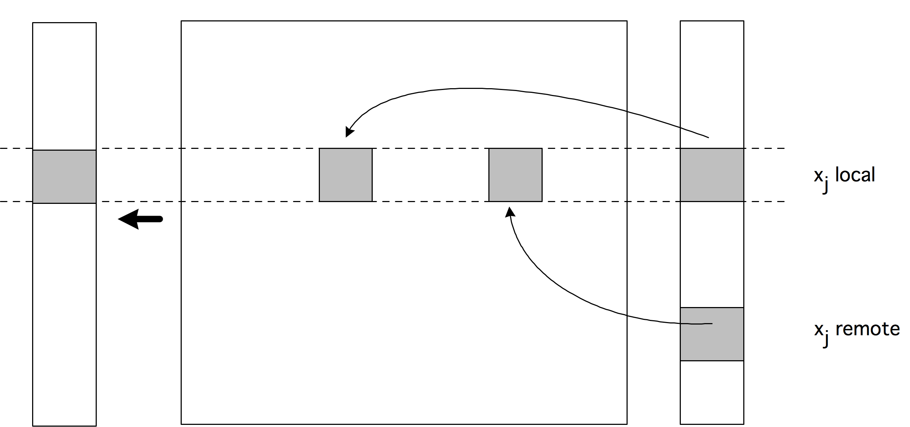\caption{The parallel matrix-vector product with a blockrow distribution.}
figure 6.2 for an illustration.) The parallel algorithm is given in figure 6.3 .
\KwIn{Processor number $p$; the elements $x\_i$ with $i\in I\_p$; matrix elements $A\_{ij}$ with $i\in I\_p$.} \KwOut{The elements $y\_i$ with $i\in I\_p$} \For{$q\not=p$}{Send elements of $x$ from processor $q$ to $p$, receive in buffer
$B\_{pq}$.} $y\sublocal\leftarrow A x\sublocal$\\ \For{$q\not=p$}{$y\sublocal\leftarrow y\sublocal+A\_{pq}B\_q$}{Parallel MVP}{$A,x\sublocal,y\sublocal,p$} \caption{A buffered implementation of the parallel matrix-vector product}
In addition to preventing an element from being fetched more than once, this also combines many small messages into one large message, which is usually more efficient; recall our discussion of bandwidth and latency in section 2.7.8 .
Give pseudocode for the matrix-vector product using nonblocking operations (section 2.6.3.6 )Above we said that having a copy of the whole of $x$ on each processor was wasteful in space. The implicit argument here is that, in general, we do not want local storage to be function of the number of processors: ideally it should be only a function of the local data. (This is related to weak scaling; section 2.2.5 .)
You see that, because of communication considerations, we have actually decided that it is unavoidable, or at least preferable, for each processor to store the whole input vector. Such trade-offs between space and time efficiency are fairly common in parallel programming. For the dense matrix-vector product we can actually defend this overhead, since the vector storage is of lower order than the matrix storage, so our over-allocation is small by ratio. Below (section 6.5 ), we will see that for the sparse matrix-vector product the overhead can be much less.
It is easy to see that the parallel dense matrix-vector product, as described above, has perfect speedup if we are allowed to ignore the time for communication . In the next couple of sections you will see that the block row implementation above is not optimal if we take communication into account. For scalability we need a two-dimensional decomposition. We start with a discussion of collectives.
6.2.2 Scalability of the dense matrix-vector product
crumb trail: > parallellinear > Parallel dense matrix-vector product > Scalability of the dense matrix-vector product
In this section, we will give a full analysis of the parallel computation of $ y \becomes A x $, where $ x, y \in \Rn $ and $ A \in \Rnxn $. We will assume that $ p $ nodes will be used, but we make no assumptions on their connectivity. We will see that the way the matrix is distributed makes a big difference for the scaling of the algorithm; for the original research see [HeWo:94,Schreiber:scalability92,Stewart90] , and see section 2.2.5 for the definitions of the various forms of scaling.
6.2.2.1 Matrix-vector product, partitioning by rows
crumb trail: > parallellinear > Parallel dense matrix-vector product > Scalability of the dense matrix-vector product > Matrix-vector product, partitioning by rows
Partition \[ A \rightarrow \defcolvector{A}{p} \quad x \rightarrow \defcolvector{x}{p} , \quad \mbox{and} \quad y \rightarrow \defcolvector{y}{p} , \] where $ A_i \in \bbR^{m_i \times n} $ and $ x_i, y_i \in \bbR^{m_i} $ with $ \sum_{i=0}^{p-1} m_i = n $ and $ m_i \approx n / p $. We will start by assuming that $ A_i $, $ x_i $, and $ y_i $ are originally assigned to $ {\cal P}_i $.
The computation is characterized by the fact that each processor needs the whole vector $x$, but owns only an $n/p$ fraction of it. Thus, we execute an allgather of $x$. After this, the processor can execute the local product $y_i\becomes A_ix$; no further communication is needed after that.
An algorithm with cost computation for $ y = A x $ in parallel is then given by
\[ \vcenter{\hskip\unitindent
| Step | Cost (lower bound) \ \whline Allgather $ x_i $ so that $ x $ is available on all nodes | $ \lceil \log_2(p)\rceil \alpha + \frac{p-1}{p} n \beta \approx \log_2(p) \alpha + n \beta $ |
| Locally compute $ y_i = A_i x $ | $ \approx 2 \frac{n^2}{p} \gamma $ \ | |
} \]
\paragraph*{Cost analysis}
The total cost of the algorithm is given by, approximately, \[ T_p(n) = T_p^{\mbox{1D-row}}(n) = 2 \frac{n^2}{p} \gamma + \begin{array}[t]{c} \underbrace{\log_2(p) \alpha + n \beta.} \\ \mbox{Overhead} \end{array} \] Since the sequential cost is $ T_1(n) = 2 n^2 \gamma $, the speedup is given by \[ S_p^{\mbox{1D-row}}(n) = \frac{T_1(n)} {T_p^{\mbox{1D-row}}(n)} = \frac{2 n^2 \gamma} { 2 \frac{n^2}{p} \gamma + \log_2(p) \alpha + n \beta} = \frac{p} { 1 + \frac{p \log_2(p)}{2 n^2} \frac{\alpha}{\gamma} + \frac{p}{2 n} \frac{\beta}{\gamma} } \] and the parallel efficiency by \[ E_p^{\mbox{1D-row}}(n) = \frac{S_p^{\mbox{1D-row}}(n)}{p} = \frac{1} { 1 + \frac{p \log_2(p)}{2 n^2} \frac{\alpha}{\gamma} + \frac{p}{2 n} \frac{\beta}{\gamma} }. \]
6.2.2.1.1 An optimist's view
crumb trail: > parallellinear > Parallel dense matrix-vector product > Scalability of the dense matrix-vector product > Matrix-vector product, partitioning by rows > An optimist's view
Now, if one fixes $ p $ and lets $ n $ get large, \[ \lim_{n \rightarrow \infty} E_p( n ) = \lim_{n \rightarrow \infty} \left[ \frac{1} { 1 + \frac{p \log_2(p)}{2 n^2} \frac{\alpha}{\gamma} + \frac{p}{2 n} \frac{\beta}{\gamma} } \right] = 1. \] Thus, if one can make the problem large enough, eventually the parallel efficiency is nearly perfect. However, this assumes unlimited memory, so this analysis is not practical.
6.2.2.1.2 A pessimist's view
crumb trail: > parallellinear > Parallel dense matrix-vector product > Scalability of the dense matrix-vector product > Matrix-vector product, partitioning by rows > A pessimist's view
In a strong scalability analysis, one fixes $ n $ and lets $ p $ get large, to get \[ \lim_{p \rightarrow \infty} E_p( n ) = \lim_{p \rightarrow \infty} \left[ \frac{1} {1 + \frac{p \log_2(p)}{2 n^2} \frac{\alpha}{\gamma} + \frac{p}{2 n} \frac{\beta}{\gamma} } \right] = 0. \] Thus, eventually the parallel efficiency becomes nearly nonexistent.
6.2.2.1.3 A realist's view
crumb trail: > parallellinear > Parallel dense matrix-vector product > Scalability of the dense matrix-vector product > Matrix-vector product, partitioning by rows > A realist's view
In a more realistic view we increase the number of processors with the amount of data. This is called weak scalability , and it makes the amount of memory that is available to store the problem scale linearly with $ p $.
Let $ M $ equal the number of floating point numbers that can be stored in a single node's memory. Then the aggregate memory is given by $ M p $. Let $ n_{\max}(p) $ equal the largest problem size that can be stored in the aggregate memory of $ p $ nodes. Then, if {\em all} memory can be used for the matrix, \[ (n_{\max}(p))^2 = M p \quad \mbox{or} \quad n_{\max}(p) = \sqrt{Mp}. \] The question now becomes what the parallel efficiency for the largest problem that can be stored on $ p $ nodes: \[ \begin{array}{r@{{}={}}l} E_p^{\mbox{1D-row}}(n_{\max}(p)) & \frac{1} {1 + \frac{p \log_2(p)}{2 (n_{\max}(p))^2} \frac{\alpha}{\gamma} + \frac{p}{2 n_{\max}(p)} \frac{\beta}{\gamma} } \\ & \frac{1} { 1 + \frac{\log_2(p)}{2 M} \frac{\alpha}{\gamma} + \frac{\sqrt{p}}{2 \sqrt{M}} \frac{\beta}{\gamma} }. \end{array} \] Now, if one analyzes what happens when the number of nodes becomes large, one finds that \[ \lim_{p \rightarrow \infty} E_p( n_{\max}(p) ) = \lim_{p \rightarrow \infty} \left[ \frac{1} {1 + \frac{\log_2(p)}{2 M} \frac{\alpha}{\gamma} + \frac{\sqrt{p}}{2 \sqrt{M}} \frac{\beta}{\gamma} } \right] = 0. \] Thus, this parallel algorithm for matrix-vector multiplication does not scale.
If you take a close look at this expression for efficiency, you'll see that the main problem is the $1/\sqrt p$ part of the expression. This terms involves a factor $\beta$, and if you follow the derivation backward you see that it comes from the time to send data between the processors. Informally this can be described as saying that the message size is too large to make the problem scalable. In fact, the message size is constant $n$, regardless the number of processors.
Alternatively, a realist realizes that there is a limited amount of time, $ T_{\max} $, to get a computation done. Under the best of circumstances, that is, with zero communication overhead, the largest problem that we can solve in time $ T_{\max} $ is given by \[ T_p(n_{\max}(p)) = 2 \frac{(n_{\max}(p))^2}{p} \gamma = T_{\max} . \] Thus \[ (n_{\max}(p))^2 = \frac{T_{\max} p}{2 \gamma} \quad \mbox{or} \quad n_{\max}(p) = \frac{\sqrt{T_{\max}} \sqrt{p}}{\sqrt{2 \gamma}}. \] Then the parallel efficiency that is attained by the algorithm for the largest problem that can be solved in time $ T_{\max} $ is given by \[ E_{p,n_{\max}}=\frac1 {1+\frac{\log_2p}T\alpha+\sqrt{\frac pT\frac \beta\gamma}} \] and the parallel efficiency as the number of nodes becomes large approaches \[ \lim_{p\rightarrow\infty}E_p= \sqrt{\frac{T\gamma}{p\beta}}. \] Again, efficiency cannot be maintained as the number of processors increases and the execution time is capped.
We can also compute the iso-efficiency curve for this operation, that is, the relationship between $n,p$ for which the efficiency stays constant (see section 2.2.5.1 ). If we simplify the efficiency above as $E(n,p)=\frac{2\gamma}{\beta}\frac{n}{p}$, then $E\equiv c$ is equivalent to $n=O(p)$ and therefore \[ M=O\left(\frac{n^2}{p}\right)=O(p). \] Thus, in order to maintain efficiency we need to increase the memory per processors pretty quickly. This makes sense, since that downplays the importance of the communication.
6.2.2.2 Matrix-vector product, partitioning by columns
crumb trail: > parallellinear > Parallel dense matrix-vector product > Scalability of the dense matrix-vector product > Matrix-vector product, partitioning by columns
Partition \[ A \rightarrow \defrowvector{A}{p} \quad x \rightarrow \defcolvector{x}{p} , \quad \mbox{and} \quad y \rightarrow \defcolvector{y}{p} , \] where $ A_j \in \bbR^{n \times n_j} $ and $ x_j, y_j \in \bbR^{n_j} $ with $ \sum_{j=0}^{p-1} n_j = n $ and $ n_j \approx n / p $.
We will start by assuming that $ A_j $, $ x_j $, and $ y_j $ are originally assigned to $ {\cal P}_j $ (but now $ A_i $ is a block of columns). In this algorithm by columns, processor $i$ can compute the length $n$ vector $A_ix_i$ without prior communication. These partial results then have to be added together \[ y\leftarrow \sum_i A_ix_i \] in a reduce-scatter operation: each processor $i$ scatters a part $(A_ix_i)_j$ of its result to processor $j$. The receiving processors then perform a reduction, adding all these fragments: \[ y_j = \sum_i (A_ix_i)_j. \]
The algorithm with costs is then given by:
\[ \vcenter{\hskip\unitindent \setbox0=\hbox{Reduce-scatter the $ y^{(j)} $s so that $ y_i = \sum_{j=0}^{p-1} y_i^{(j)} $ is on $ {\cal P}_i $ } \dimen0=\wd0 \setbox1=\hbox{$ \lceil \log_2(p)\rceil \alpha + \frac{p-1}{p} n \beta + \frac{p-1}{p} n \gamma $ } \dimen1=\wd1
| Step | Cost (lower bound) \ \whline Locally compute $ y^{(j)} = A_j x_j $ | $ \approx 2 \frac{n^2}{p} \gamma $ |
| Reduce-scatter the $ y^{(j)} $s so that $ y_i = \sum_{j=0}^{p-1} y_i^{(j)} $ is on $ {\cal P}_i $ | $ \lceil \log_2(p)\rceil \alpha + \frac{p-1}{p} n \beta + \frac{p-1}{p} n \gamma $ | |
| $ \approx \log_2(p) \alpha + n ( \beta + \gamma ) $ | ||
} \]
6.2.2.2.1 Cost analysis
crumb trail: > parallellinear > Parallel dense matrix-vector product > Scalability of the dense matrix-vector product > Matrix-vector product, partitioning by columns > Cost analysis
The total cost of the algorithm is given by, approximately, \[ T_p^{\mbox{1D-col}}(n) = 2 \frac{n^2}{p} \gamma + \begin{array}[t]{c} \underbrace{\log_2(p) \alpha + n ( \beta + \gamma ).} \\ \mbox{Overhead} \end{array} \] Notice that this is identical to the cost $ T_p^{\mbox{1D-row}}(n) $, except with $ \beta $ replaced by $ (\beta + \gamma )$. It is not hard to see that the conclusions about scalability are the same.
6.2.2.3 Two-dimensional partitioning
crumb trail: > parallellinear > Parallel dense matrix-vector product > Scalability of the dense matrix-vector product > Two-dimensional partitioning
Next, partition \[ A \rightarrow \defmatrix{A}{p}{p} \quad x \rightarrow \defcolvector{x}{p} , \quad \mbox{and} \quad y \rightarrow \defcolvector{y}{p} , \] where $ A_{ij} \in \bbR^{n_i \times n_j} $ and $ x_i, y_i \in \bbR^{n_i} $ with $ \sum_{i=0}^{p-1} n_i = N $ and $ n_i \approx N / \sqrt P $.
We will view the nodes as an $ r \times c $ mesh, with $ P = r c $, and index them as $p_{ij}$, with $ i=0, …, r-1 $ and $ j = 0,…, c-1 $. Figure 6.4 , for a $12\times12$ matrix on a $3\times4$ processor grid, illustrates the assignment of data to nodes, where the $ i,j$ `cell' shows the matrix and vector elements owned by $ p_{ij} $.
{\footnotesize \[ \begin{array}{| c | c | c | c |} \hline \begin{array}{c c c c} x_0\\ a_{00} & a_{01} &a_{02} & y_0\\ a_{10} & a_{11} &a_{12} & \\ a_{20} & a_{21} &a_{22} & \\ a_{30} & a_{31} &a_{32} & \\ \end{array} & \begin{array}{c c c c} x_3\\ a_{03} & a_{04} &a_{05} & \\ a_{13} & a_{14} &a_{15} & y_1\\ a_{23} & a_{24} &a_{25} & \\ a_{33} & a_{34} &a_{35} & \\ \end{array} & \begin{array}{c c c c} x_6\\ a_{06} & a_{07} &a_{08} & \\ a_{16} & a_{17} &a_{18} & \\ a_{26} & a_{27} &a_{28} & y_2 \\ a_{37} & a_{37} &a_{38} & \\ \end{array} & \begin{array}{c c c c} x_9\\ a_{09} & a_{0,10} & a_{0,11} & \\ a_{19} & a_{1,10} & a_{1,11} & \\ a_{29} & a_{2,10} & a_{2,11} & \\ a_{39} & a_{3,10} & a_{3,11} & y_3 \\ \end{array} \\ \hline \begin{array}{c c c c} & x_1\\ a_{40} & a_{41} &a_{42} & y_4\\ a_{50} & a_{51} &a_{52} & \\ a_{60} & a_{61} &a_{62} & \\ a_{70} & a_{71} &a_{72} & \\ \end{array} & \begin{array}{c c c c} & x_4\\ a_{43} & a_{44} &a_{45} & \\ a_{53} & a_{54} &a_{55} & y_5\\ a_{63} & a_{64} &a_{65} & \\ a_{73} & a_{74} &a_{75} & \\ \end{array} & \begin{array}{c c c c} & x_7\\ a_{46} & a_{47} &a_{48} & \\ a_{56} & a_{57} &a_{58} & \\ a_{66} & a_{67} &a_{68} & y_6 \\ a_{77} & a_{77} &a_{78} & \\ \end{array} & \begin{array}{c c c c} & x_{10}\\ a_{49} & a_{4,10} & a_{4,11} & \\ a_{59} & a_{5,10} & a_{5,11} & \\ a_{69} & a_{6,10} & a_{6,11} & \\ a_{79} & a_{7,10} & a_{7,11} & y_7 \\ \end{array} \\ \hline \begin{array}{c c c c} &&x_2\\ a_{80} & a_{81} & a_{82} & y_8\\ a_{90} & a_{91} &a_{92} & \\ a_{10,0} &a_{10,1} &a_{10,2} & \\ a_{11,0} &a_{11,1} &a_{11,2} & \\ \end{array} & \begin{array}{c c c c} &&x_5\\ a_{83} & a_{84} & a_{85} & \\ a_{93} & a_{94} & a_{95} & y_9\\ a_{10,3} & a_{10,4} &a_{10,5} & \\ a_{11,3} & a_{11,4} &a_{11,5} & \\ \end{array} & \begin{array}{c c c c} &&x_8\\ a_{86} & a_{87} & a_{88} & \\ a_{96} & a_{97} & a_{98} & \\ a_{10,6} & a_{10,7} &a_{10,8} & y_{10} \\ a_{11,7} & a_{11,7} &a_{11,8} & \\ \end{array} & \begin{array}{c c c c} &&x_{11}\\ a_{89} & a_{8,10} & a_{8,11} & \\ a_{99} & a_{9,10} & a_{9,11} & \\ a_{10,9} & a_{10,10} & a_{10,11} & \\ a_{11,9} & a_{11,10} & a_{11,11} & y_{11} \\ \end{array} \\ \hline \end{array} \] }
FIGURE 6.4: Distribution of matrix and vector elements for a problem of size 12 on a $4\times 3$ processor grid
In other words, $ p_{ij} $ owns the matrix block $A_{ij}$ and parts of $x$ and $y$. This makes possible the following algorithm
{This figure shows a partitioning of the matrix into contiguous blocks, and the vector distribution seem to be what is necessary to work with this matrix distribution. You could also look at this story the other way: start with a distribution of input and output vector, and then decide what that implies for the matrix distribution. For instance, if you distributed $x$ and $y$ the same way, you would arrive at a different matrix distribution, but otherwise the product algorithm would be much the same; see [Flame:PBMD-report] .} ):
6.2.2.3.1 Algorithm
crumb trail: > parallellinear > Parallel dense matrix-vector product > Scalability of the dense matrix-vector product > Two-dimensional partitioning > Algorithm
The algorithm with cost analysis is \[ \vcenter{\hskip\unitindent \setbox0=\hbox{Perform local matrix-vector multiply } \dimen0=\wd0 \setbox1=\hbox{$ \lceil \log_2(c)\rceil \alpha + \frac{c-1}{p} n \beta + \frac{c-1}{p} n \gamma $ } \dimen1=\wd1
| Step | Cost (lower bound) \ \whline Allgather $ x_i $'s within columns | $ \lceil \log_2(r)\rceil \alpha + \frac{r-1}{p} n \beta$ |
| $ \approx \log_2(r) \alpha + \frac{n}{c} \beta $ | ||
| Perform local matrix-vector multiply | $ \approx 2 \frac{n^2}{p} \gamma $ | |
| Reduce-scatter $ y_i $'s within rows | $ \lceil \log_2(c)\rceil \alpha + \frac{c-1}{p} n \beta + \frac{c-1}{p} n \gamma $ | |
| $ \approx \log_2(c) \alpha + \frac{n}{r} \beta + \frac{n}{r} \gamma $ | ||
} \]
6.2.2.3.2 Cost analysis
crumb trail: > parallellinear > Parallel dense matrix-vector product > Scalability of the dense matrix-vector product > Two-dimensional partitioning > Cost analysis
The total cost of the algorithm is given by, approximately, \[ T_p^{r \times c}(n) = T_p^{r \times c}( n) = 2 \frac{n^2}{p} \gamma + \begin{array}[t]{c} \underbrace{\log_2(p) \alpha + \left( \frac{n}{c} + \frac{n}{r} \right) \beta + \frac{n}{r} \gamma.} \\ \mbox{Overhead} \end{array} \] We will now make the simplification that $ r = c = \sqrt{p} $ so that \[ T_p^{\sqrt{p} \times \sqrt{p}}(n) = T_p^{\sqrt{p} \times \sqrt{p}}( n) = 2 \frac{n^2}{p} \gamma + \begin{array}[t]{c} \underbrace{\log_2(p) \alpha + \frac{n}{\sqrt{p}}\left( 2 \beta+ \gamma \right) } \\ \mbox{Overhead} \end{array} \]
Since the sequential cost is $ T_1(n) = 2 n^2 \gamma $, the speedup is given by \[ S_p^{\sqrt{p} \times \sqrt{p}}(n) = \frac{T_1(n)} {T_p^{\sqrt{p} \times \sqrt{p}}(n)} = \frac{2 n^2 \gamma} { 2 \frac{n^2}{p} \gamma + \frac{n}{\sqrt{p}} \left( 2 \beta + \gamma \right)} = \frac{p} { 1 + \frac{p \log_2(p)}{2 n^2} \frac{\alpha}{\gamma} + \frac{\sqrt{p}}{2n}\frac{ \left( 2 \beta + \gamma \right)}{\gamma}} \] and the parallel efficiency by \[ E_p^{\sqrt{p} \times \sqrt{p}}(n) = \frac{1} { 1 + \frac{p \log_2(p)}{2 n^2} \frac{\alpha}{\gamma} + \frac{\sqrt{p}}{2n}\frac{ \left( 2 \beta + \gamma \right)}{\gamma}} \]
We again ask the question what the parallel efficiency for the largest problem that can be stored on $ p $ nodes is. \begin{eqnarray*} E_p^{\sqrt{p} \times \sqrt{p}}(n_{\max}(p)) &=& \frac{1} { 1 + \frac{p \log_2(p)}{2 n^2} \frac{\alpha}{\gamma} + \frac{\sqrt{p}}{2n}\frac{ \left( 2 \beta + \gamma \right)}{\gamma}} \\ &=& \frac{1} { 1 + \frac{\log_2(p)}{2 M} \frac{\alpha}{\gamma} + \frac{1}{2\sqrt{M}}\frac{ \left( 2 \beta + \gamma \right)}{\gamma}} \end{eqnarray*} so that still \begin{eqnarray*} \lim_{p \rightarrow \infty} E_p^{\sqrt{p} \times \sqrt{p}}(n_{\max}(p)) &=& \lim_{p \rightarrow \infty} \frac{1} { 1 + \frac{\log_2(p)}{2 M} \frac{\alpha}{\gamma} + \frac{1}{2\sqrt{M}}\frac{ \left( 2 \beta + \gamma \right)}{\gamma}} = 0. \end{eqnarray*} However, $ \log_2{p} $ grows very slowly with $ p $ and is therefore considered to act much like a constant. In this case $ E_p^{\sqrt{p}\times \sqrt{p}}( n_{\rm max}(p) ) $ decreases very slowly and the algorithm is considered to be scalable for practical purposes.
Note that when $ r = p $ the 2D algorithm becomes the "partitioned by rows" algorithm and when $ c = p $ it becomes the "partitioned by columns" algorithm. It is not hard to show that the 2D algorithm is scalable in the sense of the above analysis when $ r = c $, as long as $r/c$ is kept constant.
Compute the iso-efficiency curve for this operation.
6.3 LU factorization in parallel
crumb trail: > parallellinear > LU factorization in parallel
The matrix-vector and matrix-product are easy to parallelize in one sense. The elements of the output can all be computed independently and in any order, so we have many degrees of freedom in parallelizing the algorithm. This does not hold for computing an LU factorization, or solving a linear system with the factored matrix.
6.3.1 Solving a triangular system
crumb trail: > parallellinear > LU factorization in parallel > Solving a triangular system
The solution of a triangular system $y=L\inv x$ (with $L$ is lower triangular) is a matrix-vector operation, so it has its $O(N^2)$ complexity in common with the matrix-vector product. However, unlike the product operation, this solution process contains a recurrence relation between the output elements: \[ y_{i} = \ell_{ii}\inv ( x_i-\sum_{j<i} \ell_{ij}x_j ). \] This means that parallelization is not trivial. In the case of a sparse matrix special strategies may be possible; see section 6.9 . Here we will make a few remarks about general, dense case.
Let us assume for simplicity that communication takes no time, and that all arithmetic operations take the same unit time. First we consider the matrix distribution by rows, meaning that processor $p$ stores the elements $\ell_{p*}$. With this we can implement the triangular solution as:
Show that this algorithm takes time $2N^2$, just like the sequential algorithm.
This algorithm has each processor passing all computed $y_i$ values to its successor, in a pipeline fashion. However, this means that processor $p$ receives $y_1$ only at the last moment, whereas that value was computed already in the first step. We can formulate the solution algorithm in such a way that computed elements are made available as soon as possible:
Under the assumption that communication time is negligible, this algorithm can be much faster. For instance, all processors $p>1$ receive $y_1$ simultaneously, and can compute $\ell_{p1}y_1$ simultaneously.
Show that this algorithm variant takes a time $O(N)$, if we ignore communication. What is the cost if we incorporate communication in the cost?Now consider the matrix distribution by columns: processor $p$ stores $\ell_{*p}$. Outline the triangular solution algorithm with this distribution, and show that the parallel solve time is $O(N)$.
6.3.2 Factorization, dense case
crumb trail: > parallellinear > LU factorization in parallel > Factorization, dense case
A full analysis of the scalability of parallel dense LU factorization is quite involved, so we will state without further proof that as in the matrix-vector case a two-dimensional distribution is needed. However, we can identify a further complication. Since factorizations of any type
{Gaussian elimination can be performed in right-looking, left-looking and Crout variants; see [TSoPMC] .} )progress through a matrix, processors will be inactive for part of the time.
Consider the regular right-looking Gaussian elimination for k=1..n p = 1/a(k,k) for i=k+1,n for j=k+1,n a(i,j) = a(i,j)-a(i,k)*p*a(k,j)Analyze the running time, speedup, and efficiency as a function of $N$, if we assume a one-dimensional distribution, and enough processors to store one column per processor. Show that speedup is limited.
Also perform this analysis for a two-dimensional decomposition where each processor stores one element.
For this reason, an overdecomposition is used, where the matrix is divided in more blocks than there are processors, and each processor stores several, non-contiguous, sub-matrices.
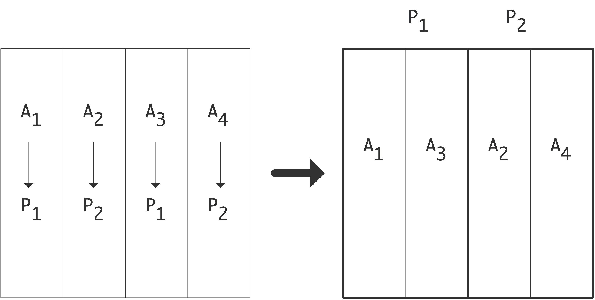\caption{One-dimensional cyclic distribution: assignment of four matrix columns to two processors, and the resulting mapping of storage to matrix columns}
We illustrate this in figure 6.5 where we divide four block columns of a matrix to two processors: each processor stores in a contiguous block of memory two non-contiguous matrix columns.
Next, we illustrate in figure 6.6
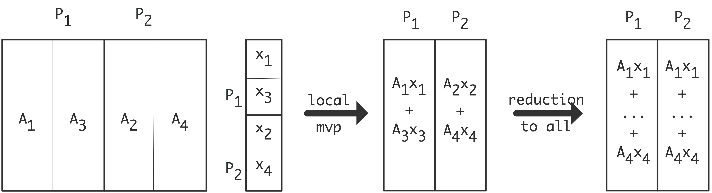FIGURE 6.6: Matrix-vector multiplication with a cyclicly distributed matrix
that a matrix-vector product with such a matrix can be performed without knowing that the processors store non-contiguous parts of the matrix. All that is needed is that the input vector is also cyclicly distributed.
Now consider a $4\times4$ matrix and a $2\times2$ processor grid. Distribute the matrix cyclicly both by rows and columns. Show how the matrix-vector product can again be performed using the contiguous matrix storage, as long as the input is distributed correctly. How is the output distributed? Show that more communication is needed than the reduction of the one-dimensional example.Specifically, with $P<N$ processors, and assuming for simplicity $N=cP$, we let processor 0 store rows $0,c,2c,3c,…$; processor 1 stores rows $1,c+1,2c+1,…$, et cetera. This scheme can be generalized two a two-dimensional distribution, if $N=c_1P_1=c_2P_2$ and $P=P_1P_2$. This is called a 2D distribution}. This scheme can be further extended by considering block rows and columns (with a small block size), and assigning to processor 0 the block rows $0,c,2c,…$.
Consider a square $n\times n$ matrix, and a square $p\times p$ processor grid, where $p$ divides $n$ without remainder. Consider the overdecomposition outlined above, and make a sketch of matrix element assignment for the specific case $n=6,p=2$. That is, draw an $n\times n$ table where location $(i,j)$ contains the processor number that stores the corresponding matrix element. Also make a table for each of the processors describing the local to global mapping, that is, giving the global $(i,j)$ coordinates of the elements in the local matrix. (You will find this task facilitated by using zero-based numbering.)Now write functions $P,Q,I,J$ of $i,j$ that describe the global to local mapping, that is, matrix element $a_{ij}$ is stored in location $(I(i,j),J(i,j))$ on processor $(P(i,j),Q(i,j))$.
6.3.3 Factorization, sparse case
crumb trail: > parallellinear > LU factorization in parallel > Factorization, sparse case
Sparse matrix LU factorization in paralleldifficult topic. Any type of factorization involves a sequential component, making it non-trivial to begin with. To see the problem with the sparse case in particular, suppose you process the matrix rows sequentially. The dense case has enough elements per row to derive parallelism there, but in the sparse case that number may be very low.
The way out of this problem is to realize that we are not interested in the factorization as such, but rather that we can use it to solve a linear system. Since permuting the matrix gives the same solution, maybe itself permuted, we can explore permutations that have a higher degree of parallelism.
The topic of matrix orderings already came up in section 5.4.3.5 , motivated by fill-in reduction. We will consider orderings with favorable parallelism properties below: nested dissection in section 6.8.1 , and multi-color orderings in section 6.8.2 .
6.4 Matrix-matrix product
crumb trail: > parallellinear > Matrix-matrix product
The matrix-matrix product $C\leftarrow A\cdot B$ (or $C\leftarrow A\cdot B+\gamma C$, as it is used in the BLAS ) has a simple parallel structure. Assuming all square matrices of size $N\times N$
However, considerably more interesting are the questions of data movement:
6.4.1 Goto matrix-matrix product
crumb trail: > parallellinear > Matrix-matrix product > Goto matrix-matrix product
In section~ 1.6.1 we argued that the matrix matrix product (or dgemm in BLAS terms) has a large amount of possible data reuse: there are $O(n^3)$ operations on $O(n^2)$ data. We will now consider an implementation, due to Kazushige Goto ~ [GotoGeijn:2008:Anatomy] , that indeed achieves close to peak performance.
The matrix-matrix algorithm has three loops, each of which we can block, giving a six-way nested loop. Since there are no recurrences on the output elements, all resulting loop exchanges are legal. Combine this with the fact that the loop blocking introduces three blocking parameters, and you'll see that the number of potential implementations is enormous. Here we present the global reasoning that underlies the Goto implementation; for a detailed discussion see the paper cited.
We start by writing the product $C\leftarrow A\cdot B$ (or $C\leftarrow C+AB$ according to the Blas standard) as a sequence of low-rank updates: \[ C_{**} = \sum_k A_{*k}B_{k*} \]
FIGURE 6.7: Matrix-matrix multiplication as a sequence of low-rank updates
See figure~ 6.7 . Next we derive the `block-panel' multiplication by multiplying a block of~$A$ by a `sliver' of~$B$; see figure~ 6.8 .
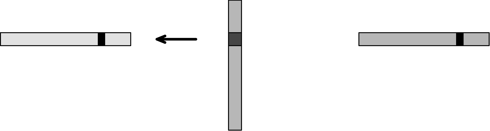FIGURE 6.8: The block-panel multiplication in the matrix-matrix algorithm
Finally, the inner algorithm accumulates a small row $C_{i,*}$, typically of small size such as~4, by accumulating:
// compute C[i,*] : for k: C[i,*] = A[i,k] * B[k,*]See figure 6.9 .
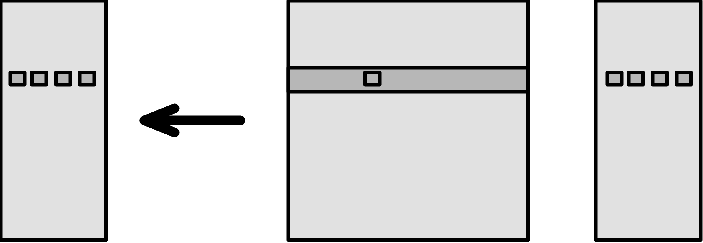FIGURE 6.9: The register-resident kernel of the matrix-matrix multiply
Now this algorithm is tuned.
This algorithm be implemented in specialized hardware, as in the Google TPU [GoogleTPUpage] , giving great energy efficiency.
6.4.2 Cannon's algorithm for the distributed memory matrix-matrix product
crumb trail: > parallellinear > Matrix-matrix product > Cannon's algorithm for the distributed memory matrix-matrix product
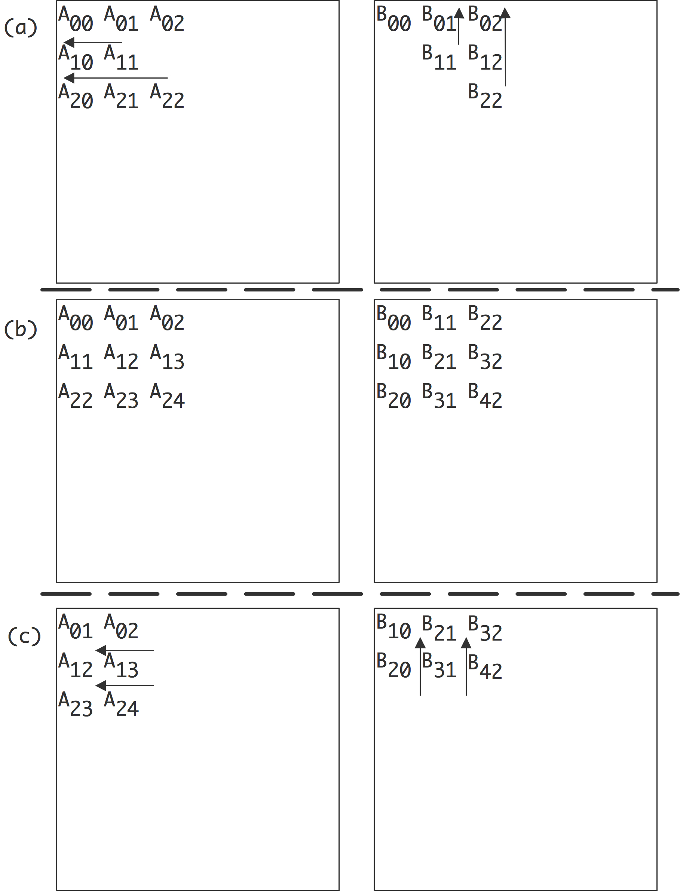
WRAPFIGURE 6.10: Cannon's algorithm for matrix-matrix multiplication: (a) initial rotation of matrix rows and columns, (b) resulting position in which processor $(i,j)$ can start accumulating $\sum_kA_{ik}B_{kj}$, (c) subsequent rotation of $A,B$ for the next term.
{r}{4in} In section 6.4.1 we considered the high performance implementation of the single-processor product}. We will now briefly consider the distributed memory version of this operation. (It is maybe interesting to note that this is not a generalization based on the matrix-vector product algorithm of section 6.2 .)
One algorithm for this operation is known as Cannon's algorithm . It assumes a square processor grid where processor $(i,j)$ gradually accumulates the $(i,j)$ block $C_{i,j}=\sum_kA_{i,k}B_{k,j}$; see figure 6.10 .
If you start top-left, you see that processor $(0,0)$ has both $A_{00}$ and $B_{00}$, so it can immediately start doing a local multiplication. Processor $(0,1)$ has $A_{01}$ and $B_{01}$, which are not needed together, but if we rotate the second column of $B$ up by one position, processor $(0,1)$ will have $A_{01},B_{11}$ and those two do need to be multiplied. Similarly, we rotate the third column of $B$ up by two places so that $(0,2)$ contains $A_{02},B_{22}$.
How does this story go in the second row? Processor $(1,0)$ has $A_{10},B_{10}$ which are not needed together. If we rotate the second row of $A$ one position to the left, it contains $A_{11},B_{10}$ which are needed for a partial product. And now processor $(1,1)$ has $A_{11},B_{11}$.
If we continue this story, we start with a matrix $A$ of which the rows have been rotated left, and $B$ of which the columns have been rotated up. In this setup, processor $(i,j)$ contains $A_{i,i+j}$ and $B_{i+j,j}$, where the addition is done modulo the matrix size. This means that each processor can start by doing a local product.
Now we observe that $C_{ij}=\sum_kA_{ik}B_{kj}$ implies that the next partial product term comes from increasing $k$ by $1$. The corresponding elements of $A,B$ can be moved into the processor by rotating the rows and columns by another location.
\Level 1 {The outer-product method for the distributed matrix-matrix product}
Cannon's algorithm suffered from the requirement of needing a square processors grid. The outer-product method % is more general. It is based the following arrangement of the matrix-matrix product calculation:
for ( k ) for ( i ) for ( j ) c[i,j] += a[i,k] * b[k,j]That is, for each $k$ we take a column of $A$ and a row of $B$, and computing the rank-1 matrix (or `outer product') $A_{*,k}\cdot B_{k,*}$. We then sum over $k$.
Looking at the structure of this algorithm, we notice that in step $k$, each column $j$ receives $A_{*,k}$, and each row $i$ receives $B_{k,*}$. In other words, elements of $A_{*,k}$ are broadcast through their row, and elements of $B_{k,*}$ are broadcast through their row.
Using the MPI library, these simultaneous broadcasts are realized by having a subcommunicator for each row and each column.
6.5 Sparse matrix-vector product
crumb trail: > parallellinear > Sparse matrix-vector product
In linear system solving through iterative methods (see section 5.5 ) the matrix-vector product is computationally an important kernel, since it is executed in each of potentially hundreds of iterations. In this section we look at performance aspects of the matrix-vector product on a single processor first; the multi-processor case will get our attention in section 6.5 .
6.5.1 The single-processor sparse matrix-vector product
crumb trail: > parallellinear > Sparse matrix-vector product > The single-processor sparse matrix-vector product
We are not much worried about the dense matrix-vector product in the context of iterative methods, since one typically does not iterate on dense matrices. In the case that we are dealing with block matrices, refer to section 1.7.11 for an analysis of the dense product. The sparse product is a lot trickier, since most of that analysis does not apply.
Data reuse in the sparse matrix-vector product
There are some similarities between the dense matrix-vector product, executed by rows, and the CRS sparse product (section 5.4.1.4 ). In both cases all matrix elements are used sequentially, so any cache line loaded is utilized fully. However, the CRS product is worse at least the following ways:
For these reasons, an application that is computationally dominated by the sparse matrix-vector product can very well be run at $\approx5\%$ of the peak performance of the processor.
It may be possible to improve this performance if the structure of the matrix is regular in some sense. One such case is where we are dealing with a block matrix consisting completely of small dense blocks. This leads at least to a reduction in the amount of indexing information: if the matrix consists of $2\times2$ blocks we get a $4\times$ reduction in the amount of integer data transferred.
Give two more reasons why this strategy is likely to improve performance. Hint: cachelines, and reuse.Such a matrix tessellation may give a factor of 2 in performance improvement. Assuming such an improvement, we may adopt this strategy even if the matrix is not a perfect block matrix: if every $2\times2$ block will contain one zero element we may still get a factor of $1.5$ performance improvement [vuduc:thesis,ButtEijkLang:spmvp] .
Vectorization in the sparse product
In other circumstances bandwidth and reuse are not the dominant concerns:
For these reasons, a variation on the diagonal storage scheme for sparse matrices has seen a revival recently. The observation here is that if you sort the matrix rows by the number of rows you get a small number of blocks of rows; each block will be fairly large, and in each block the rows have the same number of elements.
A matrix with such a structure is good for vector architectures [DAzevedo2005:vector-mvp] . In this case the product is computed by diagonals.
Write pseudo-code for this case. How did the sorting of the rows improve the situation?This sorted storage scheme also solves the problem we noted on GPUs [Bolz:GPUsparse] . In this case we the traditional CRS product algorithm, and we have an amount of parallelism equal to the number of rows in a block.
Of course there is the complication that we have permuted the matrix: the input and output vectors will need to be permuted accordingly. If the product operation is part of an iterative method, doing this permutation back and forth in each iteration will probably negate any performance gain. Instead we could permute the whole linear system and iterate on the permuted system.
Can you think of reasons why this would work? Reasons why it wouldn't?
6.5.2 The parallel sparse matrix-vector product
crumb trail: > parallellinear > Sparse matrix-vector product > The parallel sparse matrix-vector product
In section~ 5.4 you saw a first discussion of sparse matrices, limited to use on a single processor. We will now go into parallelism aspects.
The dense matrix-vector product, as you saw above, required each processor to communicate with every other, and to have a local buffer of essentially the size of the global vector. In the sparse case, considerably less buffer space, as well as less communication, is needed. Let us analyze this case. We will assume that the matrix is distributed by block rows, where processor $p$ owns the matrix rows with indices in some set~$I_p$.
The line $y_i=y_i+a_{ij}x_j$ now has to take into account that $a_{ij}$ can be zero. In particular, we need to consider that, for some pairs $i\in I_p, j\not\in I_p$ no communication will be needed. Declaring for each $i\in I_p$ a~sparsity pattern set \[ S_{p;i}=\{j\colon j\not\in I_p, a_{ij}\not=0\} \] our multiplication instruction becomes \[ y_i\mathop{+=}a_{ij}x_j\qquad\hbox{if $j\in S_{p;i}$}. \] If we want to avoid, as above, a flood of small messages, we combine all communication into a single message per processor. Defining \[ S_p = \cup_{i\in I_p} S_{p;i}, \] the algorithm now becomes:
This whole analysis of course also applies to dense matrices. This becomes different if we consider where sparse matrices come from. Let us start with a simple case.
Recall figure~ 4.1 , which illustrated a discretized boundary value problem on the simplest domain, a square, and let us now parallelize it. We do this by partitioning the domain; each processor gets the matrix rows corresponding to its subdomain. Figure~ 6.11
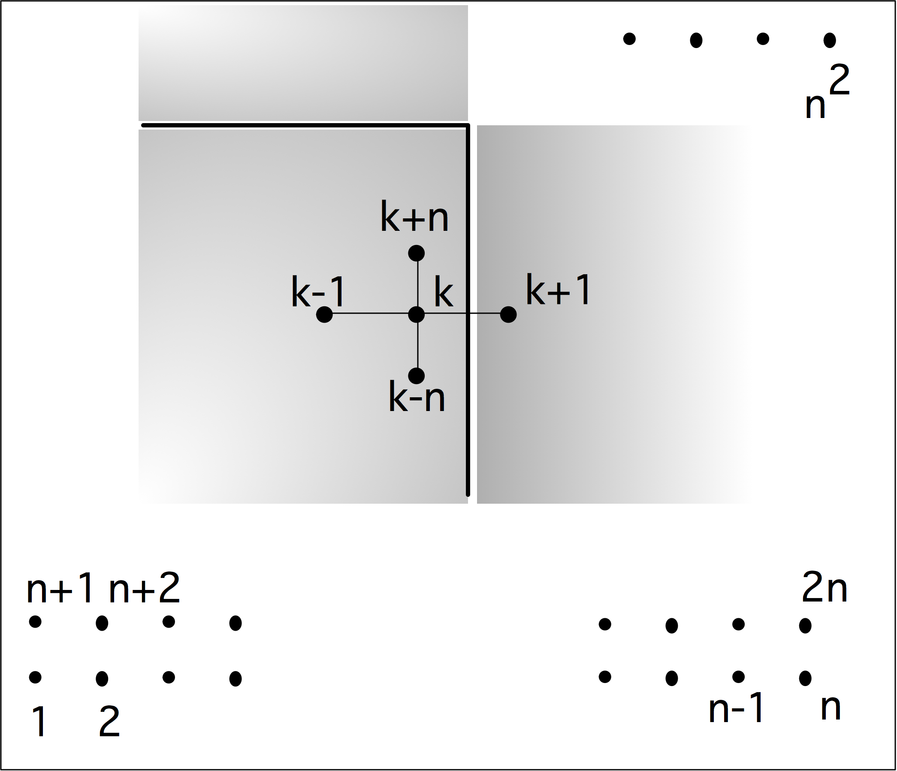\caption{A difference stencil applied to a two-dimensional square domain, distributed over processors. A cross-processor connection is indicated.}
shows how this gives rise to connections between processors: the elements $a_{ij}$ with $i\in I_p,j\not\in I_p$ are now the `legs' of the stencil that reach beyond a processor boundary. The set of all such~$j$, formally defined as \[ G = \{ j\not\in I_p \colon \exists_{i\in I_p}\colon a_{ij}\not=0 \} \] is known as the ghost region of a processor; see figure~ 6.12 .
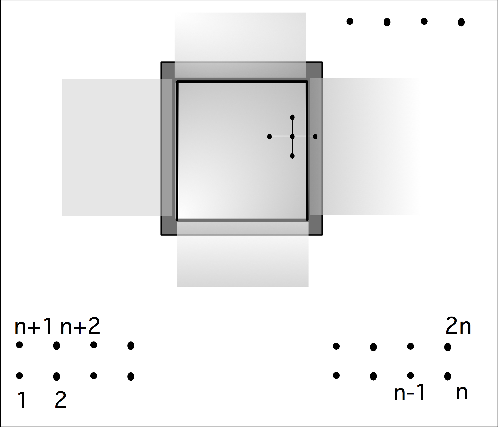FIGURE 6.12: The ghost region of a processor, induced by a stencil
Show that a one-dimensional partitioning of the domain leads to a partitioning of the matrix into block rows, but a two-dimensional partitioning of the domain does not. You can do this in the abstract, or you can illustrate it: take a $4\times4$ domain (giving a matrix of size~16), and partition it over 4 processors. The one-dimensional domain partitioning corresponds to giving each processor one line out of the domain, while the two-dimensional partitioning gives each processor a $2\times2$ subdomain. Draw the matrices for these two cases.
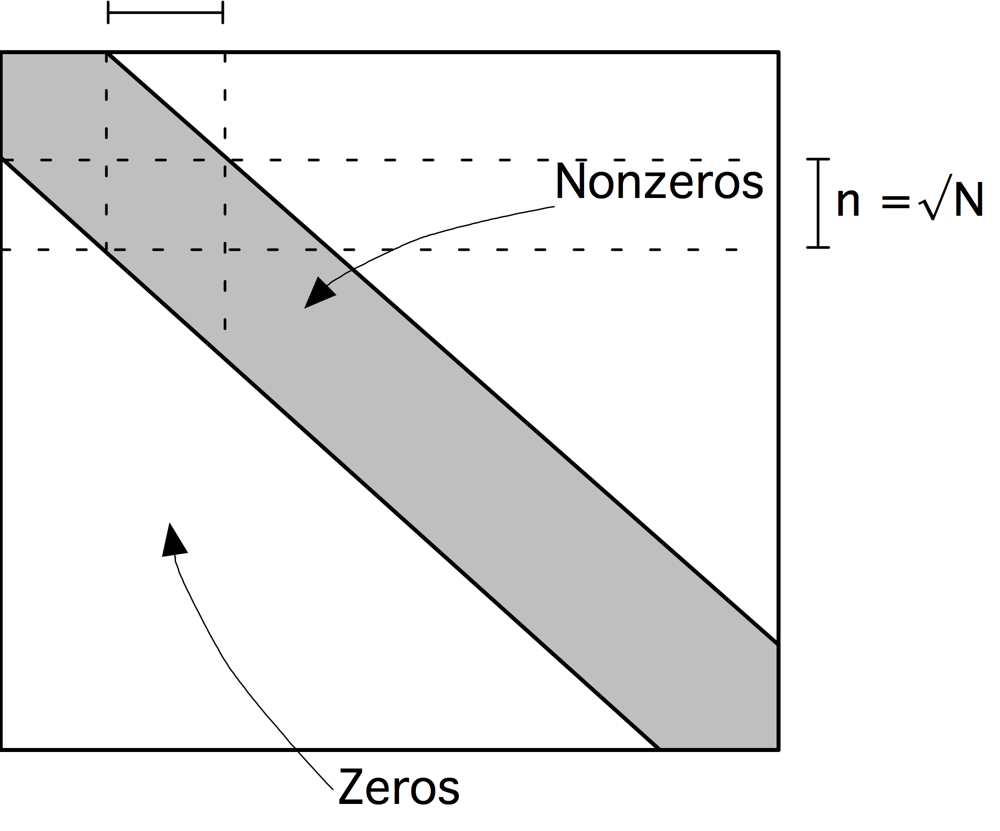
FIGURE 6.13: Band matrix with halfbandwidth $\sqrt N$
Figure~ 6.13 depicts a sparse matrix of size~$N$ with a halfbandwidth~$n=\sqrt N$. That is, \[ |i-j|>n \Rightarrow a_{ij}=0. \] We make a one-dimensional distribution of this matrix over $p$ processors, where $p=n=\sqrt N$.
Show that the matrix-vector product using this scheme is weakly scalable by computing the efficiency as function of the number of processors \[ E_p = \frac{T_1}{pT_p}. \]
Why is this scheme not really weak scaling, as it is commonly defined?
One crucial observation about the parallel sparse matrix-vector product is that, for each processor, the number of other processors it is involved with is strictly limited. This has implications for the efficiency of the operation.
6.5.3 Parallel efficiency of the sparse matrix-vector product
crumb trail: > parallellinear > Sparse matrix-vector product > Parallel efficiency of the sparse matrix-vector product
In the case of the dense matrix-vector product (section 6.2.2 ), partitioning the matrix over the processors by (block) rows did not lead to a scalable algorithm. Part of the reason was the increase in the number of neighbors that each processors needs to communicate with. Figure 6.11 shows that, for the matrix of a 5-five point stencil, this number is limited to four.
Take a square domain and a partitioning of the variables of the processors as in figure 6.11 . What is the maximum number of neighbors a processor needs to communication with for the box stencil in figure 4.3 ? In three space dimensions, what is the number of neighbors if a 7-point central difference stencil is used?The observation that each processor communicates with just a few neighbors stays intact if we go beyond square domains to more complicated physical objects. If a processor receives a more or less contiguous subdomain, the number of its neighbors will be limited. This implies that even in complicated problems each processor will only communicate with a small number of other processors. Compare this to the dense case where each processor had to receive data from every far more friendly to the interconnection network. (The fact that it also more common for large systems may influence the choice of network to install if you are about to buy a new parallel computer.)
For square domains we can make this argument formal. Let the unit domain $[0,1]^2$ be partitioned over $P$ processors in a $\sqrt P\times \sqrt P$ grid. From figure 6.11 we see that every processor communicates with at most four neighbors. Let the amount of work per processor be $w$ and the communication time with each neighbor $c$. Then the time to perform the total work on a single processor is $T_1=Pw$, and the parallel time is $T_P=w+4c$, giving a speed up of \[ S_P=Pw/(w+4c)=P/(1+4c/w)\approx P(1-4c/w). \]
Express $c$ and $w$ as functions of $N$ and $P$, and show that the speedup is asymptotically optimal, under weak scaling of the problem.In this exercise you will analyze the parallel sparse matrix-vector product for a hypothetical, but realistic, parallel machine. Let the machine parameters be characterized by (see section 1.3.2 ):
We perform a combination of asymptotic analysis and deriving specific numbers. We assume a cluster of $10^4$ single-core processors\footnote {Introducing multicore processors would complicate the story, but since the number of cores is $O(1)$, and the only way to grow a cluster is by adding more networked nodes, it does not change the asymptotic analysis.}. We apply this to a five-point stencil matrix of size $N=25\cdot 10^{10}$. This means each processor stores $5\cdot 8\cdot N/p=10^9$ bytes. If the matrix comes from a problem on a square domain, this means the domain was size $n\times n$ where $n=\sqrt N=5\cdot 10^5$.
Case 1. Rather than dividing the matrix, we divide the domain, and we do this first by horizontal slabs of size $n\times (n/p)$. Argue that the communication complexity is $2(\alpha+n\beta)$ and computation complexity is $10\cdot n\cdot (n/p)$. Show that the resulting computation outweighs the communication by a factor 250.
Case 2. We divide the domain into patches of size $(n/\sqrt p)\times (n/\sqrt p)$. The memory and computation time are the same as before. Derive the communication time and show that it is better by a factor of 50.
Argue that the first case does not weakly scale: under the assumption that $N/p$ is constant the efficiency will go down. (Show that speedup still goes up asymptotically as $\sqrt p$.) Argue that the second case does scale weakly.
The argument that a processor will only connect with a few neighbors is based on the nature of the scientific computations. It is true for FDM and FEM methods. In the case of the BEM , any subdomain needs to communicate with everything in a radius $r$ around it. As the number of processors goes up, the number of neighbors per processor will also go up.
Give a formal analysis of the speedup and efficiency of the BEM algorithm. Assume again a unit amount of work $w$ per processor and a time of communication $c$ per neighbor. Since the notion of neighbor is now based on physical distance, not on graph properties, the number of neighbors will go up. Give $T_1,T_p,S_p,E_p$ for this case.There are also cases where a sparse matrix needs to be handled similarly to a dense matrix. For instance, Google 's PageRank algorithm (see section 9.5 ) has at its heart the repeated operation $x\leftarrow Ax$ where $A$ is a sparse matrix with $A_{ij}\not=0$ if web page $j$ links to page $i$; see section 9.5 . This makes $A$ a very sparse matrix, with no obvious structure, so every processor will most likely communicate with almost every other.
6.5.4 Memory behavior of the sparse matrix-vector product
crumb trail: > parallellinear > Sparse matrix-vector product > Memory behavior of the sparse matrix-vector product
In section 1.7.11 you saw an analysis of the sparse matrix-vector product in the dense case, on a single processor. Some of the analysis carries over immediately to the sparse case, such as the fact that each matrix element is used only once and that the performance is bound by the bandwidth between processor and memory.
Regarding reuse of the input and the output vector, if the matrix is stored by rows, such as in CRS format (section 5.4.1.3 ), access to the output vector will be limited to one write per matrix row. On the other hand, the loop unrolling trick for getting reuse of the input vector can not be applied here. Code that combines two iterations is as follows:
for (i=0; i<M; i+=2) { s1 = s2 = 0; for (j) { s1 = s1 + a[i][j] * x[j]; s2 = s2 + a[i+1][j] * x[j]; } y[i] = s1; y[i+1] = s2; }The problem here is that if $a_{ij}$ is nonzero, it is not guaranteed that $a_{i+1,j}$ is nonzero. The irregularity of the sparsity pattern makes optimizing the matrix-vector product hard. Modest improvements are possible by identifying parts of the matrix that are small dense blocks [ButtEijkLang:spmvp,DemEtAl:ieeeproc2004,oski] .
On a GPU the sparse matrix-vector product is also limited by memory bandwidth. Programming is now harder because the GPU has to work in data parallel mode, with many active threads.
An interesting optimization becomes possible if we consider the context in which the sparse matrix-vector product typically appears. The most common use of this operation is in iterative solution methods for linear systems (section 5.5 ), where it is applied with the same matrix in possibly hundreds of iterations. Thus we could consider leaving the matrix stored on the GPU and only copying the input and output vectors for each product operation.
6.5.5 The transpose product
crumb trail: > parallellinear > Sparse matrix-vector product > The transpose product
In section 5.4.1.3 you saw that the code for both the regular and the transpose matrix-vector product are limited to loop orderings where rows of the matrix are traversed. (In section 1.6.2 you saw a discussion of computational effects of changes in loop order; in this case we are limited to row traversal by the storage format.)
In this section we will briefly look at the parallel transpose product. Equivalently to partitioning the matrix by rows and performing the transpose product, we look at a matrix stored and partitioned by columns and perform the regular product.
The algorithm for the product by columns can be given as:
$y\leftarrow 0$
for $j$:
\> for $i$:
\>\> $y_i\leftarrow y_i+a_{ij}x_j$
Both in shared and distributed memory we distribute outer iterations over processors. The problem is then that each outer iteration updates the whole output vector. This is a problem: with shared memory it leads to multiple writes to locations in the output and in distributed memory it requires communication that is as yet unclear.
One way to solve this would be to allocate a private output vector $y^{(p)}$ for each process:
$y^{(p)}\leftarrow 0$
for $j\in$ the rows of processor $p$
\> for all $i$:
\>\> $y^{(p)}_i\leftarrow y^{(p)}_i+a_{ji}x_j$
after which we sum $y\leftarrow\sum_py^{(p)}$.
6.5.6 Setup of the sparse matrix-vector product
crumb trail: > parallellinear > Sparse matrix-vector product > Setup of the sparse matrix-vector product
While the dense matrix-vector product relies on collectives (see section 6.2 ), the sparse case uses point-to-point communication, that is, every processor sends to just a few neighbors, and receives from just a few. This makes sense for the type of sparse matrices that come from PDEs which have a clear structure, as you saw in section 4.2.3 . However, there are sparse matrices that are so random that you essentially have to use dense techniques; see section 9.6 .
However, there is an asymmetry between sending and receiving. It is fairly easy for a processor to find out what other processors it will be receiving from.
Assume that the matrix is divided over the processors by block rows; see figure 6.2 for an illustration. Also assume that each processor knows which rows each other processor stores. (How would you implement that knowledge?)Sketch the algorithm by which a processor can find out who it will be receiving from; this algorithm should not involve any communication itself.
Discovering who to send to is harder.
Argue that this is easy in the case of a structurally symmetric matrix : $a_{ij}\not=0\Leftrightarrow a_{ji}\not=0$.In the general case, a processor can in principle be asked to send to any other, so the simple algorithm is as follows:
You will note that, even though the communication during the matrix-vector product involves only a few neighbors for each processor, giving a cost that is $O(1)$ in the number of processors, the setup involves all-to-all communications, which have time complexity $O(\alpha P)$
If a processor has only a few neighbors, the above algorithm is wasteful. Ideally, you would want space and running time proportional to the number of neighbors. We could bring the receive time in the setup if we knew how many messages were to be expected. That number can be found:
The reduce-scatter call has time complexity $\alpha\log P+\beta P$, which is of the same order as the previous algorithm, but probably with a lower proportionality constant.
The time and space needed for the setup can be reduced to $O(\log P)$ with some sophisticated trickery [Falgout:scalable-hypre,Hoefler:2010:SCP] .
6.6 Computational aspects of iterative methods
crumb trail: > parallellinear > Computational aspects of iterative methods
All iterative methods feature the following operations:
6.6.1 Vector operations
crumb trail: > parallellinear > Computational aspects of iterative methods > Vector operations
There are two types of vector operations in a typical iterative method: vector additions and inner products.
Consider the CG method of section 5.5.11 , figure 5.10 , applied to the matrix from a 2D BVP ; equation \eqref{eq:5starmatrix}, First consider the unpreconditioned case $M=I$. Show that there is a roughly equal number of floating point operations are performed in the matrix-vector product and in the vector operations. Express everything in the matrix size $N$ and ignore lower order terms. How would this balance be if the matrix had 20 nonzeros per row?Next, investigate this balance between vector and matrix operations for the FOM scheme in section 5.5.9 . Since the number of vector operations depends on the iteration, consider the first 50 iterations and count how many floating point operations are done in the vector updates and inner product versus the matrix-vector product. How many nonzeros does the matrix need to have for these quantities to be equal?
Flop counting is not the whole truth. What can you say about the efficiency of the vector and matrix operations in an iterative method, executed on a single processor?
6.6.1.1 Vector additions
crumb trail: > parallellinear > Computational aspects of iterative methods > Vector operations > Vector additions
The vector additions are typically of the form $x\leftarrow x+\alpha y$ or $x\leftarrow \alpha x+y$. If we assume that all vectors are distributed the same way, this operation is fully parallel.
6.6.1.2 Inner products
crumb trail: > parallellinear > Computational aspects of iterative methods > Vector operations > Inner products
Inner products are vector operations, but they are computationally more interesting than updates, since they involve communication.
When we compute an inner product, most likely every processor needs to receive the computed value. We use the following algorithm:
\For {processor $p$} { compute $a\_p\leftarrow x\_p^ty\_p$ where $x\_p,y\_p$ are the part of $x,y$ stored on processor $p$ } do a global reduction to compute $a=\sum\_p a\_p$ \
broadcast the result \caption{Compute $a\leftarrow x^ty$ where $x,y$ are distributed vectors}The reduction and broadcast (which can be joined into an {\tt Allreduce}) combine data over all processors, so they have a communication time that increases with the number of processors. This makes the inner product potentially an expensive operation, and people have suggested a number of ways to reducing their impact on the performance of iterative methods.
Iterative methods are typically used for sparse matrices. In that context, you can argue that the communication involved in an inner product can have a larger influence on overall performance than the communication in the matrix-vector product. What is the complexity of the matrix-vector product and the inner product as a function of the number of processors?Here are some of the approaches that have been taken.
Since computer arithmetic is not associative, inner products are a prime source of results that differ when the same calculation is executed of two different processor configurations. In section 3.5.5 we sketched a solution.
6.6.2 Finite element matrix construction
crumb trail: > parallellinear > Computational aspects of iterative methods > Finite element matrix construction
The FEM leads to an interesting issue in parallel computing. For this we need to sketch the basic outline of how this method works. The FEM derives its name from the fact that the physical objects modeled are divided into small two or three dimensional shapes, the elements, such as triangles and squares in 2D, or pyramids and bricks in 3D. On each of these, the function we are modeling is then assumed to polynomial, often of a low degree, such as linear or bilinear.
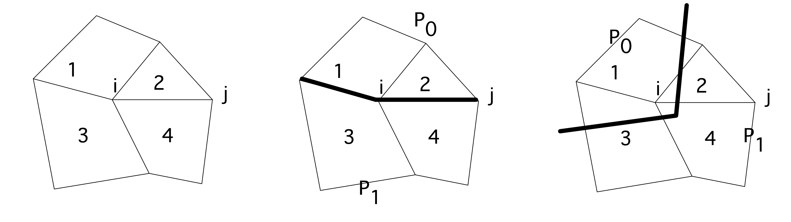\caption{A finite element domain, parallelization of the matrix construction, and parallelization of matrix element storage}
The crucial fact is that a matrix element $a_{ij}$ is then the sum of computations, specifically certain integrals, over all elements that contain both variables $i$ and $j$: \[ a_{ij}=\sum_{e\colon i,j\in e} a^{(e)}_{ij}. \] The computations in each element share many common parts, so it is natural to assign each element $e$ uniquely to a processor $P_e$, which then computes all contributions $a^{(e)}_{ij}$. In figure 6.14 element 2 is assigned to processor 0 and element 4 to processor 1.
Now consider variables $i$ and $j$ and the matrix element $a_{ij}$. It is constructed as the sum of computations over domain elements 2 and 4, which have been assigned to different processors. Therefore, no matter what processor row $i$ is assigned to, at least one processor will have to communicate its contribution to matrix element $a_{ij}$.
Clearly it is not possibly to make assignments $P_e$ of elements and $P_i$ of variables such that $P_e$ computes in full the coefficients $a_{ij}$ for all $i\in e$. In other words, if we compute the contributions locally, there needs to be some amount of communication to assemble certain matrix elements. For this reason, modern linear algebra libraries such as PETSc tut:petsc ) allow any processor to set any matrix element.
6.6.3 A simple model for iterative method performance
crumb trail: > parallellinear > Computational aspects of iterative methods > A simple model for iterative method performance
Above, we have already remarked that iterative methods have very little opportunity for data reuse, and they are therefore characterized as bandwidth-bound algorithms. This allows us to make a simple prediction as to the floating point performance of iterative methods. Since the number of iterations of an iterative method is hard to predict, by performance here we mean the performance of a single iteration. Unlike with direct methods for linear systems (see for instance section 6.8.1 ), the number of flops to solution is very hard to establish in advance.
First we argue that we can restrict ourselves to the performance of the sparse matrix vector product : the time spent in this operation is considerably more than in the vector operations. Additionally, most preconditioners have a computational structure that is quite similar to the matrix-vector product.
Let us then consider the performance of the CRS matrix-vector product matrix-vector product}.
For the parallel performance of the sparse matrix-vector product we consider that in a PDE context each processor communicates only with a few neighbors. Furthermore, a surface-to-volume argument shows that the message volume is of a lower order than the on-node computation.
In sum, we conclude that a very simple model for the sparse matrix vector product, and thereby for the whole iterative solver, consists of measuring the effective bandwidth and computing the performance as one addition and one multiplication operation per 12 or 16 bytes loaded.
6.7 Parallel preconditioners
crumb trail: > parallellinear > Parallel preconditioners
Above (section 5.5.6 and in particular 5.5.6.1 ) we saw a couple of different choices of $K$. In this section we will begin the discussion of parallelization strategies. The discussion is continued in detail in the next sections.
6.7.1 Jacobi preconditioning
crumb trail: > parallellinear > Parallel preconditioners > Jacobi preconditioning
The Jacobi method (section 5.5.3 ) uses the diagonal of $A$ as preconditioner. Applying this is as parallel as is possible: the statement $y\leftarrow K\inv x$ scales every element of the input vector independently. Unfortunately the improvement in the number of iterations with a Jacobi preconditioner is rather limited. Therefore we need to consider more sophisticated methods such ILU . Unlike with the Jacobi preconditioner, parallelism is then not trivial.
6.7.2 The trouble with ILU in parallel
crumb trail: > parallellinear > Parallel preconditioners > The trouble with ILU in parallel
Above we saw that, in a flop counting sense, applying an ILU preconditioner (section 5.5.6.1 ) is about as expensive as doing a matrix-vector product. This is no longer true if we run our iterative methods on a parallel computer.
At first glance the operations are similar. A matrix-vector product $y=Ax$ looks like
for i=1..n y[i] = sum over j=1..n a[i,j]*x[j]In parallel this would look like
for i=myfirstrow..mylastrow y[i] = sum over j=1..n a[i,j]*x[j]Suppose that a processor has local copies of all the elements of $A$ and $x$ that it will need, then this operation is fully parallel: each processor can immediately start working, and if the work load is roughly equal, they will all finish at the same time. The total time for the matrix-vector product is then divided by the number of processors, making the speedup more or less perfect.
Consider now the forward solve $Lx=y$, for instance in the context of an ILU preconditioner:
for i=1..n x[i] = (y[i] - sum over j=1..i-1 ell[i,j]*x[j]) / a[i,i]We can simply write the parallel code:
for i=myfirstrow..mylastrow x[i] = (y[i] - sum over j=1..i-1 ell[i,j]*x[j]) / a[i,i]but now there is a problem. We can no longer say `suppose a processor has local copies of everything in the right hand side', since the vector $x$ appears both in the left and right hand side. While the matrix-vector product is in principle fully parallel over the matrix rows, this triangular solve code is recursive, hence sequential.
In a parallel computing context this means that, for the second processor to start, it needs to wait for certain components of $x$ that the first processor computes. Apparently, the second processor can not start until the first one is finished, the third processor has to wait for the second, and so on. The disappointing conclusion is that in parallel only one processor will be active at any time, and the total time is the same as for the sequential algorithm. This is actually not a big problem in the dense matrix case, since parallelism can be found in the operations for handling a single row (see section 6.11 ), but in the sparse case it means we can not use incomplete factorizations without some redesign.
In the next few subsections we will see different strategies for finding preconditioners that perform efficiently in parallel.
6.7.3 Block Jacobi methods
crumb trail: > parallellinear > Parallel preconditioners > Block Jacobi methods
Various approaches have been suggested to remedy this sequentiality the triangular solve. For instance, we could simply let the processors ignore the components of $x$ that should come from other processors:
for i=myfirstrow..mylastrow x[i] = (y[i] - sum over j=myfirstrow..i-1 ell[i,j]*x[j]) / a[i,i]This is not mathematically equivalent to the sequential algorithm (technically, it is called a block Jacobi method with ILU as the local solve ), but since we're only looking for an approximation $K\approx A$, this is simply a slightly cruder approximation.
Take the Gauss-Seidel code you wrote above, and simulate a parallel run. What is the effect of increasing the (simulated) number of processors?The idea behind block methods can be appreciated pictorially; see figure 6.15 .
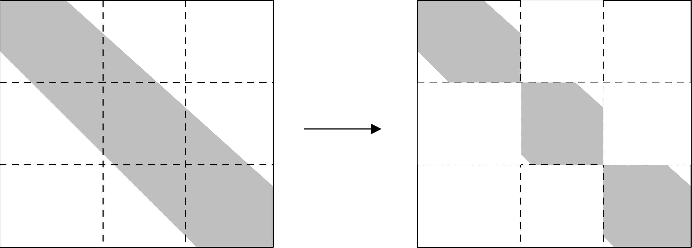\caption{Sparsity pattern corresponding to a block Jacobi preconditioner}
In effect, we make an ILU of the matrix that we get by ignoring all connections between processors. Since in a BVP all points influence each other (see section 4.2.1 ), using a less connected preconditioner will increase the number of iterations if executed on a sequential computer. However, block methods are parallel and, as we observed above, a sequential preconditioner is very inefficient in a parallel context, so we put up with this increase in iterations.
6.7.4 Parallel ILU
crumb trail: > parallellinear > Parallel preconditioners > Parallel ILU
The Block Jacobi preconditioner operates by decoupling domain parts. While this may give a method that is highly parallel, it may give a higher number of iterations than a true ILU preconditioner. (A theoretical argument can be made that this decoupling decreases the efficiency of the iterative method; see section 4.2.1 .) Fortunately it is possible to have a parallel ILU method. Since we need the upcoming material on re-ordering of variables, we postpone this discussion until section 6.8.2.3 .
6.8 Ordering strategies and parallelism
crumb trail: > parallellinear > Ordering strategies and parallelism
In the foregoing we have remarked on the fact that solving a linear system of equations is inherently a recursive activity. For dense systems, the number of operations is large enough compared to the recursion length that finding parallelism is fairly straightforward. Sparse systems, on the other hand, take more sophistication. In this section we will look at a number of strategies for reordering the equations (or, equivalently, permuting the matrix) that will increase the available parallelism.
These strategies can all be considered as variants of Gaussian elimination. By making incomplete variants of them (see section 5.5.6.1 ), all these strategies also apply to constructing preconditioners for iterative solution methods.
6.8.1 Nested dissection
crumb trail: > parallellinear > Ordering strategies and parallelism > Nested dissection
Above, you have seen several examples of ordering the variables in the domain other than with the lexicographic ordering . In this section you will see the nested dissection ordering , which was initially designed as a way to reduce fill-in. However, it is also advantageous in a parallel computing context.
Nested dissection is a recursive process for determining a nontrivial ordering of the unknowns in a domain. In the first step, the computational domain is split in two parts, with a dividing strip between them; see figure~ 6.16 .
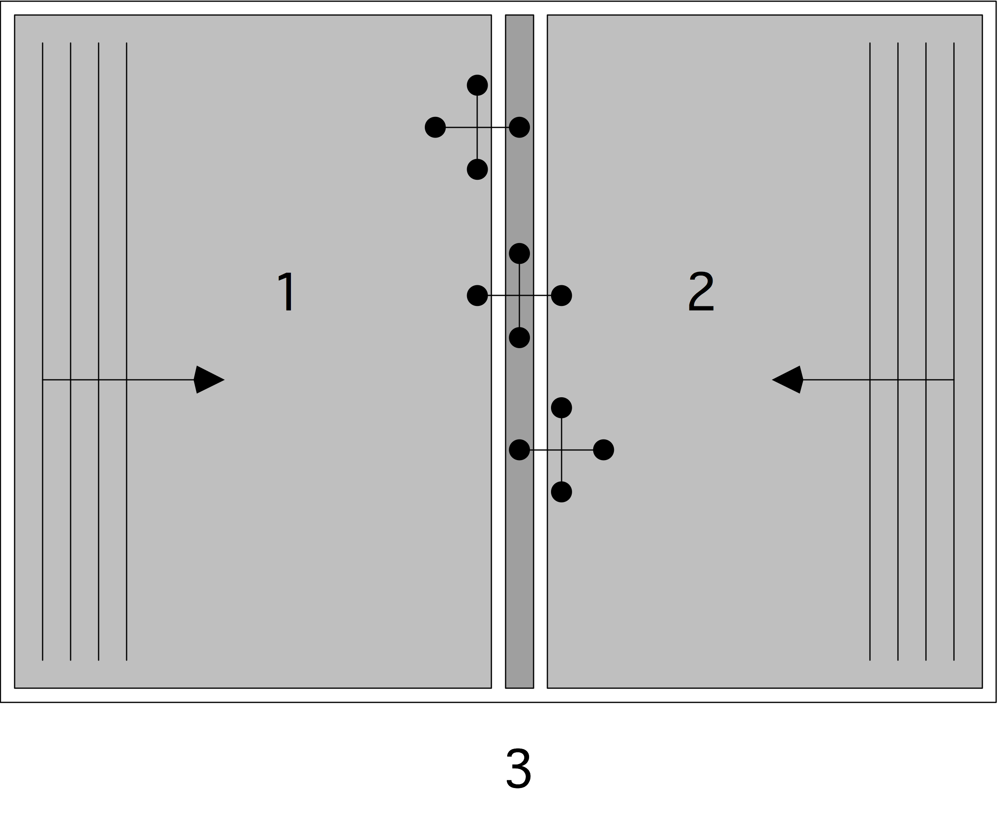FIGURE 6.16: Domain dissection into two unconnected subdomains and a separator
\newcommand\Add{A^{\mathrm{DD}}} To be precise, the separator is wide enough that there are no connections between the left and right subdomain . The resulting matrix $\Add$ has a $3\times3$ structure, corresponding to the three divisions of the domain. Since the subdomains $\Omega_1$ and~$\Omega_2$ are not connected, the submatrices $\Add_{12}$ and~$\Add_{21}$ are zero. \[ \Add= \begin{pmatrix} A_{11}&\emptyset&A_{13}\\ \emptyset&A_{22}&A_{23}\\ A_{31}&A_{32}&A_{33} \end{pmatrix} = \left( \begin{array}{ccccc|ccccc|c} \star&\star & & & &&&&&&0\\ \star&\star &\star & & &&&&&&\vdots\\ &\ddots&\ddots&\ddots& &&&\emptyset&&&\vdots\\ & &\star &\star &\star &&&&&&0\\ & & &\star &\star &&&&&&\star\\ \hline &&&&&\star&\star & & & &0\\ &&&&&\star&\star &\star & & &\vdots\\ &&\emptyset&&& &\ddots&\ddots&\ddots& &\vdots\\ &&&&& & &\star &\star &\star &0\\ &&&&& & & &\star &\star &\star\\ \hline 0&\cdots&\cdots&0&\star&0&\cdots&\cdots&0&\star&\star \end{array} \right) \begin{array}{c} \left. \begin{array}{c} \phantom{0}\\ \phantom{\vdots}\\ \phantom{\vdots}\\ \phantom{0}\\ \phantom{\star}\\ \end{array} \right\} \\ \left. \begin{array}{c} \phantom{0}\\ \phantom{\vdots}\\ \phantom{\vdots}\\ \phantom{0}\\ \phantom{\star}\\ \end{array} \right\} \\ \left. \begin{array}{c} \phantom{0}\\ \end{array} \right\} \end{array} \begin{array}{c} \phantom{0}\\ \phantom{\vdots}\\ (n^2-n)/2\\ \phantom{0}\\ \phantom{\star}\\ \phantom{0}\\ \phantom{\vdots}\\ (n^2-n)/2\\ \phantom{0}\\ \phantom{\star}\\ n \end{array} \] This process of dividing the domain by a separator is also called domain decomposition or substructuring , although this name is also associated with the mathematical analysis of the resulting matrices~ [BGSm:96] . In this example of a rectangular domain it is of course trivial to find a separator. However, for the type of equations we get from BVPs it is usually feasible to find a separator efficiently for any domain~ [LiTa:separator] ; see also section~ 19.6.2 .
Let us now consider the $LU$ factorization of this matrix. If we factor it in terms of the $3\times 3$ block structure, we get \[ \Add=LU= \begin{pmatrix} I\\ \emptyset&I\\ A_{31}A_{11}\inv&A_{32}A_{22}\inv&I \end{pmatrix} \begin{pmatrix} A_{11}&\emptyset&A_{13}\\ &A_{22}&A_{23}\\ &&S_{33} \end{pmatrix} \] where \[ S_{33}=A_{33}-A_{31}A_{11}\inv A_{13}-A_{32}A_{22}\inv A_{23}. \] The important fact here is that
The third block can not trivially be handled in parallel, so this introduces a sequential component in the algorithm. We also need to take a closer look at the structure of~$S_{33}$.
In section~ 5.4.3.1 you saw the connection between LU factorization and graph theory: eliminating a node leads to a graph with that node removed, but with certain new connections added. Show that, after eliminating the first two sets of variables, the graph of the remaining matrix on the separator will be fully connected.The upshot is that after eliminating all the variables in blocks 1 and 2 we are left with a matrix $S_{33}$ that is fully dense of size $n\times n$.
The introduction of a separator gave us a factorization that was two-way parallel. Now we iterate this process: we put a separator inside blocks 1 and 2 (see figure 6.17 ), which gives the following matrix structure:
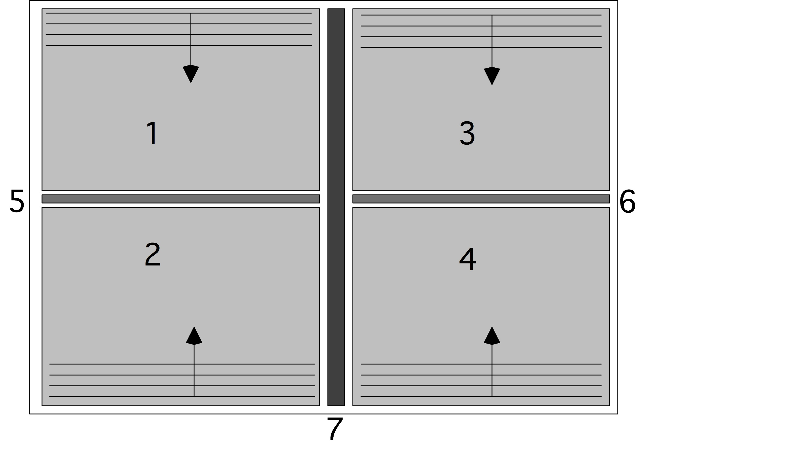FIGURE 6.17: A four-way domain decomposition
\[ \Add= \left( \begin{array}{cccc|cc|c} A_{11}& & & &A_{15}& &A_{17}\\ &A_{22}& & &A_{25}& &A_{27}\\ & &A_{33}& & &A_{36}&A_{37}\\ & & &A_{44}& &A_{46}&A_{47}\\ \hline A_{51}&A_{52}& & &A_{55}& &A_{57}\\ & &A_{63}&A_{64}& &A_{66}&A_{67}\\ \hline A_{71}&A_{72}&A_{73}&A_{74}&A_{75}&A_{76}&A_{77} \end{array} \right) \] (Note the similarities with the `arrow' matrix in section 5.4.3.4 , and recall the argument that this led to lower fill-in.) The LU factorization of this is: \[ \left( \begin{array}{cccc|cc|c} I& & & & & &\\ &I & & & & &\\ & &I & & & &\\ & & &I & & &\\ \hline A_{51}A_{11}\inv&A_{52}A_{22}\inv& & &I & &\\ & &A_{63}A_{33}\inv&A_{64}A_{44}\inv& &I &\\ \hline A_{71}A_{11}\inv&A_{72}A_{22}\inv&A_{73}A_{33}\inv&A_{74}A_{44}\inv& A_{75}S_5\inv&A_{76}S_6\inv&I \end{array} \right) \cdot \] \[ \kern 3\unitindent \left( \begin{array}{cccc|cc|c} A_{11}& & & &A_{15}& &A_{17}\\ &A_{22}& & &A_{25}& &A_{27}\\ & &A_{33}& & &A_{36}&A_{37}\\ & & &A_{44}& &A_{46}&A_{47}\\ \hline & & & &S_{5}& &A_{57}\\ & & & & &S_{6} &A_{67}\\ \hline & & & & & &S_{7} \end{array} \right) \] where \[ \begin{array}{l} S_5=A_{55}-A_{51}A_{11}\inv A_{15}-A_{52}A_{22}\inv A_{25},\quad S_6=A_{66}-A_{63}A_{33}\inv A_{36}-A_{64}A_{44}\inv A_{46}\\ S_7=A_{77}-\sum_{i=1,2,3,4}A_{7i}A_{ii}\inv A_{i7} - \sum_{i=5,6} A_{7i}S_i\inv A_{17}. \end{array} \] Constructing the factorization now goes as follows:
Analogous to the above reasoning, we conclude that after eliminating blocks 1,2,3,4 the updated matrices $S_5,S_6$ are dense of size $n/2$, and after eliminating blocks 5,6 the Schur complement $S_7$ is dense of size $n$.
Show that solving a system with $\Add$ has a similar parallelism to constructing the factorization as described above.For future reference, we will call the sets 1 and 2 each others' siblings, and similarly for 3 and 4. The set 5 is the parent of 1 and 2, 6 is the parent of 3 and 4; 5 and 6 are siblings and 7 is the parent of 5 and 6.
6.8.1.1 Domain decomposition
crumb trail: > parallellinear > Ordering strategies and parallelism > Nested dissection > Domain decomposition
In figure 6.17 we divided the domain four ways by a recursive process. This leads up to our discussion of nested dissection. It is also possible to immediately split a domain in any number of strips, or in a grid of subdomains. As long as the separators are wide enough, this will give a matrix structure with many independent subdomains. As in the above discussion, an LU factorization will be characterized by
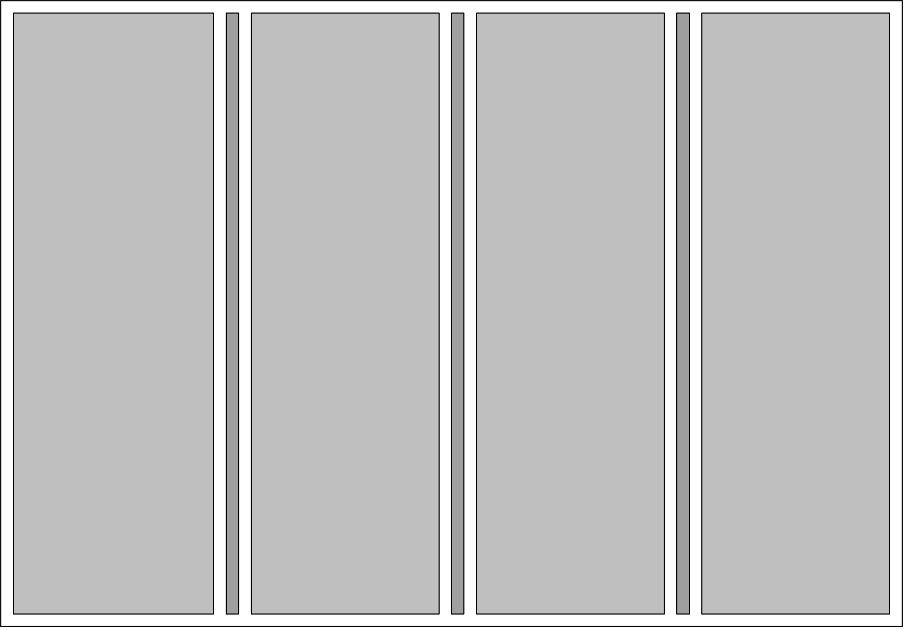
FIGURE 6.18: One-way domain decomposition
The matrix from a two-dimensional BVP has a block tridiagonal structure. Divide the domain in four strips, that is, using three separators (see figure 6.18 ). Note that the separators are uncoupled in the original matrix.
Now sketch the sparsity structure of the resulting system on the separators are elimination of the subdomains. Show that the system is block tridiagonal.
In all the domain splitting schemes we have discussed so far we have used domains that were rectangular, or `brick' shaped, in more than two dimensions. All of these arguments are applicable to more general domains in two or three dimensions, but things like finding a separator become much harder [LiRoTa:dissection] , and that holds even more for the parallel case. See section 19.6.2 for some introduction to this topic.
6.8.1.2 Complexity
crumb trail: > parallellinear > Ordering strategies and parallelism > Nested dissection > Complexity
The nested dissection method repeats the above process until the subdomains are very small. For a theoretical analysis, we keep dividing until we have subdomains of size $1\times1$, but in practice one could stop at sizes such as $32$, and use an efficient dense solver to factor and invert the blocks.
To derive the complexity of the algorithm, we take another look at figure 6.17 , and see that complexity argument, the total space a full recursive nested dissection factorization needs is the sum of
With the observation that $n=\sqrt N$, this sums to \[ \begin{array}{r@{{}={}}l} \mathrm{space}&3/2n^2+4\cdot 3/2(n/2)^2+\cdots\\ & N(3/2+3/2+\cdots)\quad\hbox{$\log n$ terms}\\ & O(N\log N) \end{array} \] \[ \begin{array}{r@{{}={}}l} \mathrm{time}&5/12n^3/3+4\cdot 5/12(n/2)^3/3+\cdots\\ & 5/12 N^{3/2}(1+1/4+1/16+\cdots)\\ & O(N^{3/2}) \end{array} \] Apparently, we now have a factorization that is parallel to a large extent, and that is done in $O(N\log N)$ space, rather than $O(N^{3/2})$ (see section 5.4.3.3 ). The factorization time has also gone down from $O(N^2)$ to $O(N^{3/2})$.
Unfortunately, this space savings only happens in two dimensions: in three dimensions we need
This makes the total space \[ \frac{7}{4}N^{3/2}(1+(1/8)^{4/3}+\cdots)=O(N^{3/2}) \] and the total time \[ \frac{21}{16}N^2(1+1/16+\cdots)/3=O(N^2). \] We no longer have the tremendous savings of the 2D case. A much more complicated analysis shows that the order improvement holds for general problems in 2D, and that 3D in general has a higher complexity [LiRoTa:dissection] .
6.8.1.3 Parallelism
crumb trail: > parallellinear > Ordering strategies and parallelism > Nested dissection > Parallelism
The nested dissection method clearly introduces a lot of parallelism, and we can characterize it as task parallelism (section 2.5.3 ): associated with each separator is a task of factoring its matrix, and later one of solving a linear system on its variables. However, the tasks are not independent: in figure 6.17 the factorization on domain 7 has to wait for 5 and 6, and they have to wait for 1,2,3,4. Thus, we have tasks with dependencies in the form of a tree: each separator matrix can be factored only when its children have been factored.
Mapping these tasks to processors is not trivial. First of all, if we are dealing with shared memory we can use a simple task queue:
\label{fig:taskqueue} $\mbox{Queue}\leftarrow\{\}$\
\For{all bottom level subdomains $d$}{add $d$ to the Queue} \While{Queue is not empty} {\If{a processor is idle}{assign a queued task to it} \If{a task is finished AND its sibling is finished}{add its parent to the queue} }The main problem here is that at some point we will have more processors than tasks, thus causing load unbalance. This problem is made more severe by the fact that the last tasks are also the most substantial, since the separators double in size from level to level. (Recall that the work of factoring a dense matrix goes up with the third power of the size!) Thus, for the larger separators we have to switch from task parallelism to medium-grained parallelism, where processors collaborate on factoring a block.
With distributed memory, we can now solve the parallelism problem with a simple task queue, since it would involve moving large amounts of data. (But recall that work is a higher power of the matrix size, which this time works in our favor, making communication relatively cheap.) The solution is then to use some form of domain decomposition. In figure 6.17 we could have four processors, associated with block 1,2,3,4. Processors 1 and 2 would then negotiate which one factors block 5 (and similarly processors 3 and 4 and block 6), or they could both do it redundantly.
6.8.1.4 Preconditioning
crumb trail: > parallellinear > Ordering strategies and parallelism > Nested dissection > Preconditioning
As with all factorizations, it is possible to turn the nested dissection method into a preconditioner by making the factorization incomplete. (For the basic idea of incomplete factorizations, see section 5.5.6.1 ). However, here the factorization is formulated completely in terms of block matrices , and the division by the pivot element becomes an inversion or system solution with the pivot block matrix. We will not go into this further; for details see the literature [AxPo:dd2,Eij:general,Me:dd] .
6.8.2 Variable reordering and coloring: independent sets
crumb trail: > parallellinear > Ordering strategies and parallelism > Variable reordering and coloring: independent sets
Parallelism can be achieved in sparse matrices by using graph coloring (section~ 19.3 ). Since a `color' is defined as points that are only connected to other colors, they are by definition independent of each other, and therefore can be processed in parallel. This leads us to the following strategy:
6.8.2.1 Red-black coloring
crumb trail: > parallellinear > Ordering strategies and parallelism > Variable reordering and coloring: independent sets > Red-black coloring
We start with a simple example, where we consider a tridiagonal matrix~$A$. The equation $Ax=b$ looks like \[ \begin{pmatrix} a_{11}&a_{12}&&&&\emptyset\\ a_{21}&a_{22}&a_{23}\\ &a_{32}&a_{33}&a_{34}\\ \emptyset&&\ddots&\ddots&\ddots \end{pmatrix} \begin{pmatrix} x_1\\ x_2\\ x_3\\ \vdots \end{pmatrix} = \begin{pmatrix} y_1\\ y_2\\ y_3\\ \vdots \end{pmatrix} \] We observe that $x_i$ directly depends on $x_{i-1}$ and~$x_{i+1}$, but not $x_{i-2}$ or~$x_{i+1}$. Thus, let us see what happens if we permute the indices to group every other component together.
Pictorially, we take the points $1,\ldots,n$ and color them red and black (figure~ 6.19 ), then we permute them to first
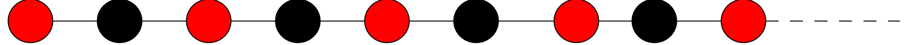FIGURE 6.19: Red-black ordering of a the points on a line
take all red points, and subsequently all black ones. The correspondingly permuted matrix looks as follows: \[ \begin{pmatrix} a_{11}&&&&a_{12}\\ &a_{33}&&&a_{32}&a_{34}\\ &&a_{55}&&&\ddots&\ddots\\ &&&\ddots\\ a_{21}&a_{23}&&&a_{22}\\ &a_{43}&a_{45}&&&a_{44}\\ &&\ddots&\ddots&&&\ddots \end{pmatrix} \begin{pmatrix} x_1\\ x_3\\ x_5\\ \vdots\\ x_2\\ x_4\\ \vdots \end{pmatrix} = \begin{pmatrix} y_1\\ y_3\\ y_5\\ \vdots\\ y_2\\ y_4\\ \vdots \end{pmatrix} \] With this permuted $A$, the Gauss-Seidel matrix $D_A+L_A$ looks like \[ \begin{pmatrix} a_{11}&&&&\emptyset\\ &a_{33}\\ &&a_{55}\\ &&&\ddots\\ a_{21}&a_{23}&&&a_{22}\\ &a_{43}&a_{45}&&&a_{44}\\ &&\ddots&\ddots&&&\ddots \end{pmatrix} \] What does this buy us? Well, let's spell out the solution of a system $Lx=y$.
\For{$i=1,3,5,\ldots$}{solve $x\_i\leftarrow y\_i/a\_{ii}$} \For{$i=2,4,6,\ldots$}{compute $t=a\_{ii-1}x\_{i-1}+a\_{ii+1}x\_{i+1}$ \
solve $x\_i\leftarrow (y\_i-t)/a\_{ii}$ }Apparently the algorithm has three stages that are each parallel over half the domain points. This is illustrated in figure~ 6.20 .
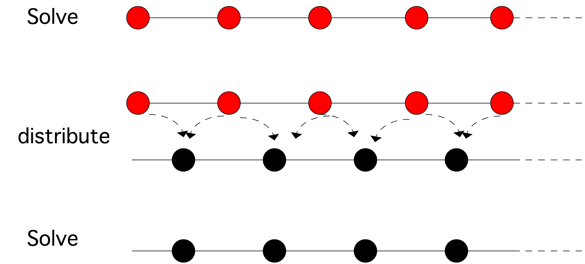FIGURE 6.20: Red-black solution on a 1d domain
Theoretically we could accommodate a number of processors that is half the number of the domain points, but in practice each processor will have a subdomain. Now you can see in figure~ 6.21 how this causes a very modest amount of communication: each processor sends at most the data of two red points to its neighbors.
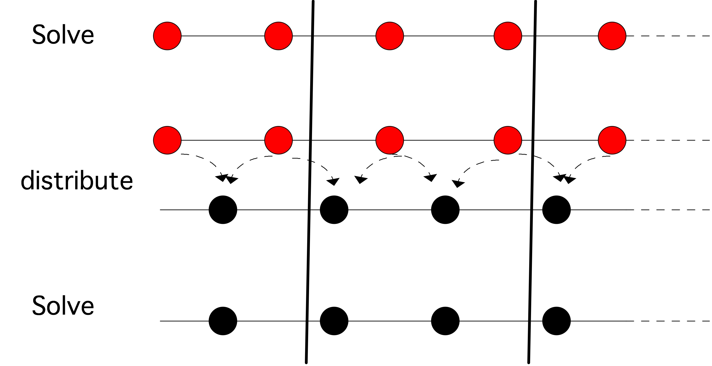FIGURE 6.21: Parallel red-black solution on a 1d domain
Argue that the adjacency graph here is a bipartite graph . We see that such graphs (and in general, colored graphs) are associated with parallelism. Can you also point out performance benefits for non-parallel processors?
Red-black ordering can be applied to two-dimensional problems too. Let us apply a red-black ordering to the points $(i,j)$ where $1\leq i,j\leq n$. Here we first apply a successive numbering to the odd points on the first line $(1,1),(3,1),(5,1),…$, then the even points of the second line $(2,2),(4,2),(6,2),…$, the odd points on the third line, et cetera. Having thus numbered half the points in the domain, we continue with the even points in the first line, the odd points in the second, et cetera.
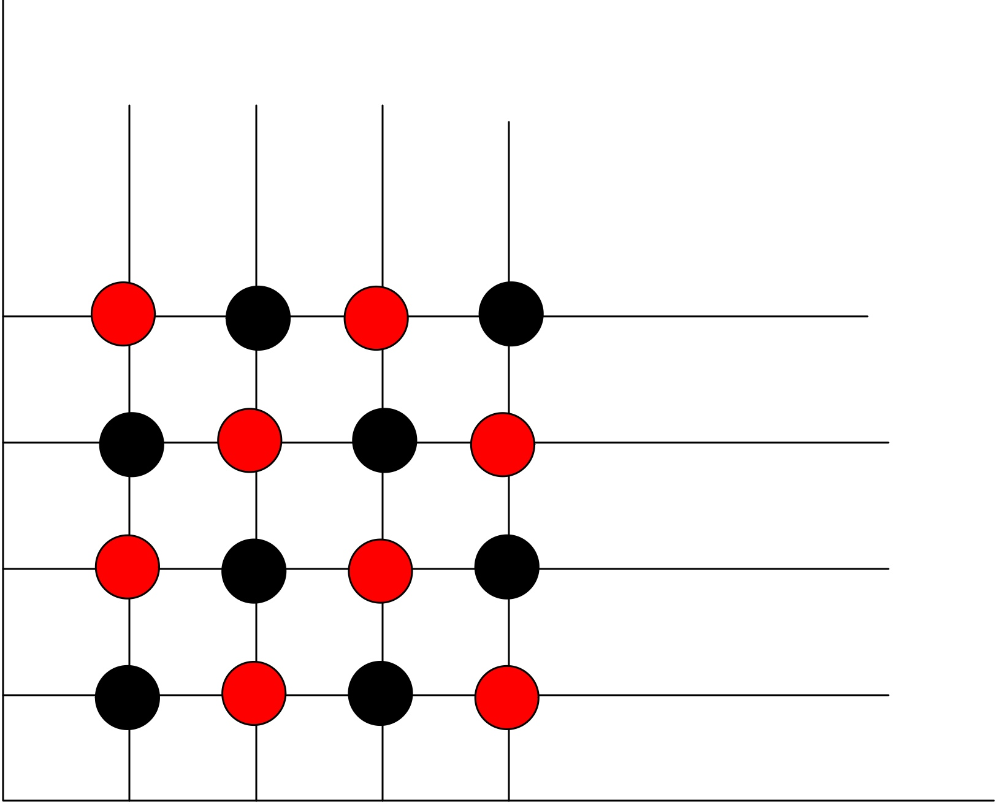\caption{Red-black ordering of the variables of a two-dimensional domain}
As you can see in figure 6.22 , now the red points are only connected to black points, and the other way around. In graph theoretical terms, you have found a coloring (see appendix app:graph for the definition of this concept) of the matrix graph with two colors.
Apply the red-black ordering to the 2D BVP \eqref{eq:laplace}. Sketch the resulting matrix structure.The red-black ordering is a simple example of graph coloring (sometimes called multi-coloring ). In simple cases, such as the unit square domain we considered in section 4.2.3 or its extension to 3D, the color number of the adjacency graph is readily determined; in less regular cases it is harder.
You saw that a red-black ordering of unknowns coupled with the regular five-point star stencil give two subsets of variables that are not connected among themselves, that is, they form a two-coloring of the matrix graph. Can you find a coloring if nodes are connected by the second stencil in figure 4.3 ?
6.8.2.2 General coloring
crumb trail: > parallellinear > Ordering strategies and parallelism > Variable reordering and coloring: independent sets > General coloring
There is a simple bound for the number of colors needed for the graph of a sparse matrix: the number of colors is at most $d+1$ where $d$ is the degree of the graph. To see that we can color a graph with degree $d$ using $d+1$ colors, consider a node with degree $d$. No matter how its neighbors are colored, there is always an unused color among the $d+1$ available ones.
Consider a sparse matrix, where the graph can be colored with $d$ colors. Permute the matrix by first enumerating the unknowns of the first color, then the second color, et cetera. What can you say about the sparsity pattern of the resulting permuted matrix?If you are looking for a direct solution of the linear system you can repeat the process of coloring and permuting on the matrix that remains after you have eliminated one color. In the case of a tridiagonal matrix you saw that this remaining matrix was again tridiagonal, so it is clear how to continue the process. This is called recursive doubling . If the matrix is not tridiagonal but block tridiagonal , this operation can be performed on blocks.
6.8.2.3 Multi-color parallel ILU
crumb trail: > parallellinear > Ordering strategies and parallelism > Variable reordering and coloring: independent sets > Multi-color parallel ILU
In section 6.8.2 you saw the combination of graph coloring and permutation. Let $P$ be the permutation that groups like-colored variables together, then $\tilde A=P^tAP$ is a matrix with the following structure:
Now, if you are performing an iterative system solution and you are looking for a parallel preconditioner you can use this permuted matrix. Consider solving $Ly=x$ with the permuted system. We write the usual algorithm (section 5.3.5 ) as
for $c$ in the set of colors:
\>for $i$ in the variables of color $c$:
\>\>$y_i\leftarrow x_i-\sum_{j<i} \ell_{ij}y_j$
Show that the flop count of solving a system $LUx=y$ remains the same (in the highest order term) when you from an ILU factorization in the natural ordering to one in the color-permuted ordering.
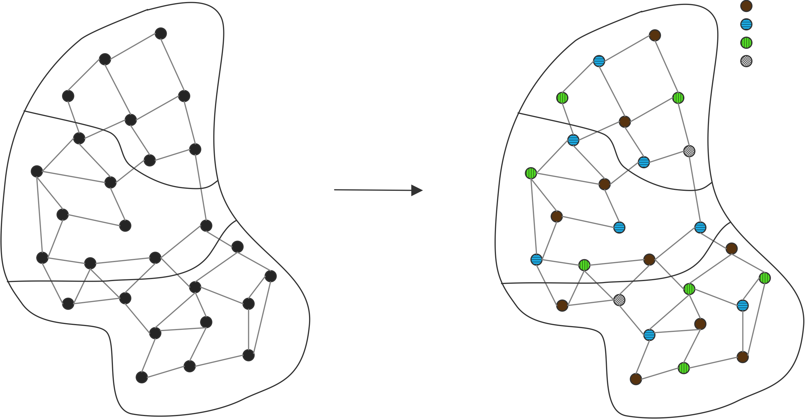
FIGURE 6.23: A partitioned domain with colored nodes
Where does all this coloring get us? Solving is still sequential… Well, it is true that the outer loop over the colors is sequential, but all the points of one color are independent of each other, so they can be solved at the same time.
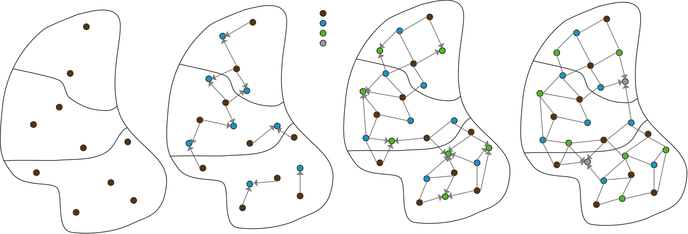FIGURE 6.24: Solving a parallel multicolor ILU in four steps
So if we use an ordinary domain partitioning and combine that with a multi-coloring (see figure 6.23 ), the processors are all active during all the color stages; see figure 6.24 . Ok, if you take a close look at that figure you'll see that one processor is not active in the last color. With large numbers of nodes per processor this is unlikely to happen, but there may be some load imbalance.
One remaining problem is how to generate the multi-coloring in parallel. Finding the optimal color number is NP-hard. The thing that saves us is that we don't necessarily need the optimal number because we are making in incomplete factorization anyway. (There is even an argument that using a slightly larger number of colors decreases the number of iterations.)
An elegant algorithm for finding a multi-coloring in parallel was found by [jopl94,Luby:parallel] :
6.8.3 Irregular iteration spaces
crumb trail: > parallellinear > Ordering strategies and parallelism > Irregular iteration spaces
Applying a computational stencil , in the context of explicit time-stepping or as a sparse matrix-vector product, is parallel. However, in practice it may not be trivial to split the iteration space. If the iteration space is a Cartesian brick, it is easy, even with nested parallelism. However, in case of symmetry it becomes harder to make an even load distribution . A typical iteration space then looks like:
for (i=0; i<N; i++) for (j=i; j<N; j++) for (k=j; k<N; k++)In some cases (see [Briggs:CMB] ) the bounds can be even more complicated, such as \verb/j=i+i%2/ or \verb/k<max(i+j,N)/.
In such cases the following can be done:
6.8.4 Ordering for cache efficiency
crumb trail: > parallellinear > Ordering strategies and parallelism > Ordering for cache efficiency
The performance of stencil operations is often quite low. The operations have no obvious cache reuse; often they resemble stream operations where long streams of data are retrieved from memory and used only once. If only a single stencil evaluation was done, that would be the end of the story. However, usually we do many such updates, and we can apply techniques similar to loop tiling described in section 1.7.8 .
We can do better than with plain tiling if we take the shape of the stencil into account.
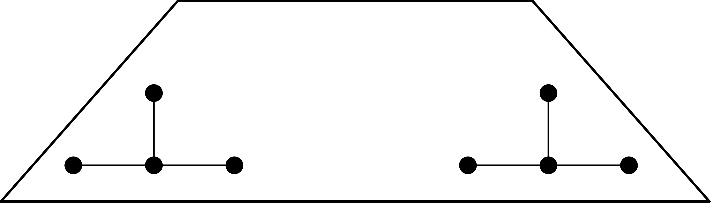\caption{First and second step in cache-optimized iteration space traversal}
Figure 6.25 shows (left) how we first compute a time-space trapezoid that is cache-contained. Then (right) we compute another cache-contained trapezoid that builds on the first [Frigo:2007:oblivious-stencil] .
\Level 0 {Parallelism in solving linear systems from PDEs }
The numerical solution of PDEs is an important activity, and the precision required often makes it a prime candidate for parallel treatment. If we wonder just how parallel we can be, and in particular what sort of a speedup is attainable, we need to distinguish between various aspects of the question.
First of all we can ask if there is any intrinsic parallelism in the problem. On a global level this will typically not be the case (if parts of the problem were completely uncoupled, then they would be separate problems, right?) but on a smaller level there may be parallelism.
For instance, looking at time-dependent problems, and referring to section 4.2.1 , we can say that every next time step is of course dependent on the previous one, but not every individual point on the next time step is dependent on every point in the previous step: there is a region of influence . Thus it may be possible to partition the problem domain and obtain parallelism.
6.8.5 Operator splitting
crumb trail: > parallellinear > Ordering strategies and parallelism > Operator splitting
In some contexts, it is necessary to perform implicit calculations through all directions of a two or three-dimensional array. For example, in section 4.3 you saw how the implicit solution of the heat equation gave rise to repeated systems
(\alpha I+\frac {d^2}{dx^2}+\frac{d^2}{dy^2})u^{(t+1)}=u^{(t)} \label{eq:heat-recap} \end{equation}Without proof, we state that the time-dependent problem can also be solved by
(\beta I+\frac {d^2}{dx^2})(\beta I+\frac{d^2}{dy^2})u^{(t+1)}=u^{(t)} \label{eq:adi-recap} \end{equation}for suitable $\beta$. This scheme will not compute the same values on each individual time step, but it will converge to the same steady state. The scheme can also be used as a preconditioner in the BVP case.
This approach has considerable advantages, mostly in terms of operation counts: the original system has to be solved either making a factorization of the matrix, which incurs fill-in , or by solving it iteratively.
Analyze the relative merits of these approaches, giving rough operation counts. Consider both the case where $\alpha$ has dependence on $t$ and where it does not. Also discuss the expected speed of various operations.A further advantage appears when we consider the parallel solution of \eqref{eq:adi-recap}. Note that we have a two-dimensional set of variables $u_{ij}$, but the operator $I+d^2u/dx^2$ only connects $u_{ij},u_{ij-1},u_{ij+1}$. That is, each line corresponding to an $i$ value can be processed independently. Thus, both operators can be solved fully parallel using a one-dimensional partition on the domain. The solution of a the system in \eqref{eq:heat-recap}, on the other hand, has limited parallelism.
Unfortunately, there is a serious complication: the operator in $x$ direction needs a partitioning of the domain in on direction, and the operator in $y$ in the other. The solution usually taken is to transpose the $u_{ij}$ value matrix in between the two solves, so that the same processor decomposition can handle both. This transposition can take a substantial amount of the processing time of each time step.
Discuss the merits of and problems with a two-dimensional decomposition of the domain, using a grid of $P=p\times p$ processors. Can you suggest a way to ameliorate the problems?One way to speed up these calculations, is to replace the implicit solve, by an explicit operation; see section 6.9.3 .
6.9 Parallelism and implicit operations
crumb trail: > parallellinear > Parallelism and implicit operations
In the discussion of IBVPs (section~ 4.1.2.2 ) you saw that implicit operations can have great advantages from the point of numerical stability. However, you also saw that they make the difference between methods based on a simple operation such as the matrix-vector product, and ones based on the more complicated linear system solution. There are further problems with implicit methods when you start computing in parallel.
Let $A$ be the matrix \begin{pmatrix} a\_{11}&&\emptyset\\ a\_{21}&a\_{22}\\ &\ddots&\ddots\\ \emptyset&&a\_{n,n-1}&a\_{nn} \end{pmatrix} . \label{eq:ex:bidiagonal} \end{equation}A= Show that the matrix vector product $y\leftarrow Ax$ and the system solution $x\leftarrow A\inv y$, obtained by solving the triangular system $Ax=y$, not by inverting $A$, have the same operation count.
Now consider parallelizing the product $y\leftarrow Ax$. Suppose we have $n$ processors, and each processor $i$ stores $x_i$ and the $i$-th row of $A$. Show that the product $Ax$ can be computed without idle time on any processor but the first.
Can the same be done for the solution of the triangular system $Ax=y$? Show that the straightforward implementation has every processor idle for an $(n-1)/n$ fraction of the computation.
We will now see a number of ways of dealing with this inherently sequential component.
6.9.1 Wavefronts
crumb trail: > parallellinear > Parallelism and implicit operations > Wavefronts
Above, you saw that solving a lower triangular system of size $N$ can have sequential time complexity of $N$ steps. In practice, things are often not quite that bad. Implicit algorithms such as solving a triangular system are inherently sequential, but the number of steps can be less than is apparent at first.
Take another look at the matrix from a two-dimensional BVP on the unit square, discretized with central differences. Derive the matrix structure if we order the unknowns by diagonals. What can you say about the sizes of the blocks and the structure of the blocks themselves?Let us take another look at figure 4.1 that describes the finite difference stencil of a two-dimensional BVP . The corresponding picture for the stencil of the lower triangular factor is
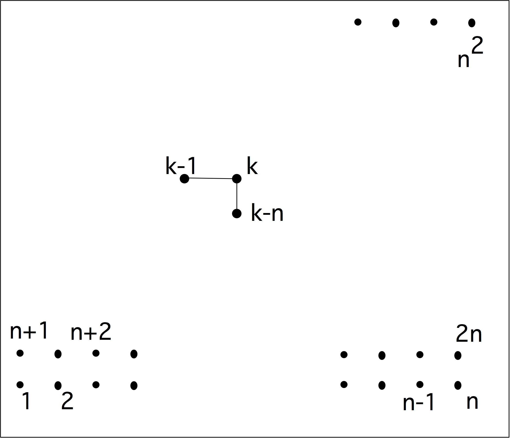\caption{The difference stencil of the $L$ factor of the matrix of a two-dimensional BVP }
in figure 6.26 . This describes the sequentiality of the lower triangular solve process $x\leftarrow L\inv y$: \[ x_k = y_k - \ell_{k,k-1}x_{k-1} - \ell_{k,k-n}x_{k-n} \] In other words, the value at point $k$ can be found if its neighbors to the left (that is, variable $k-1$) and below (variable $k-n$) are known.
Turning this around, we see that, if we know $x_1$, we can not only find $x_2$, but also $x_{n+1}$. In the next step we can determine $x_3$, $x_{n+2}$, and $x_{2n+1}$. Continuing this way, we can solve $x$ by wavefronts : the values of $x$ on each wavefront are independent, so they can be solved in parallel in the same sequential step.
Finish this argument. What is the maximum number of processors we can employ, and what is the number of sequential steps? What is the resulting efficiency?Of course you don't have to use actual parallel processing to exploit this parallelism. Instead you could use a vector processor , vector instructions , or a GPU [Liu:cudasw2009] .
In section 5.4.3.5 you saw the Cuthill-McKee ordering for reducing the fill-in of a matrix. We can modify this algorithm as follows to give wavefronts:
6.9.2 Recursive doubling
crumb trail: > parallellinear > Parallelism and implicit operations > Recursive doubling
Recursions $y_{i+1} = a_i y_i + b_i $, such as appear in solving a bilinear set of equations (see exercise 4.2.2 ), seem intrinsically sequential. However, you already saw in exercise 1.3 how, at the cost of some preliminary operations, the computation can be parallelized.
We will now formalize this strategy, generally known as recursive doubling bidiagonal matrix from \eqref{eq:ex:bidiagonal} and scale it to be of the normalized form \[ \begin{pmatrix} 1&&\emptyset\\ b_{21}&1\\ &\ddots&\ddots\\ \emptyset&&b_{n,n-1}&1 \end{pmatrix} \] which we write as $A=I+B$.
Show that the scaling to normalized form can be done by multiplying with a diagonal matrix. How does solving the system $(I+B)x=y$ help in solving $Ax=y$? What are the operation counts of solving the system in the two different ways?Now we do something that looks like Gaussian elimination, except that we do not start with the first row, but the second. (What would happen if you did Gaussian elimination or LU decomposition on the matrix $I+B$?) We use the second row to eliminate $b_{32}$: \[ \begin{pmatrix} 1&&&\emptyset\\ &1\\ &-b_{32}&1\\ &&&\ddots\\ \emptyset&&&&1 \end{pmatrix} \times \begin{pmatrix} 1&&&\emptyset\\ b_{21}&1\\ &b_{32}&1\\ &&\ddots&\ddots\\ \emptyset&&&b_{n,n-1}&1 \end{pmatrix} = \begin{pmatrix} 1&&&\emptyset\\ b_{21}&1\\ -b_{32}b_{21}&0&1\\ \emptyset&&b_{n,n-1}&1 \end{pmatrix} \] which we write as $L^{(2)}A=A^{(2)}$. We also compute $L^{(2)}y=y^{(2)}$ so that $A^{(2)}x=y^{(2)}$ has the same solution as $Ax=y$. Solving the transformed system gains us a little: after we compute $x_1$, $x_2$ and $x_3$ can be computed in parallel.
Now we repeat this elimination process by using the fourth row to eliminate $b_{54}$, the sixth row to eliminate $b_{76}$, et cetera. The final result is, summarizing all $L^{(i)}$ matrices: {\small \[ \begin{pmatrix} 1&&&&&&&\emptyset\\ 0&1\\ &-b_{32}&1\\ &&0&1\\ &&&-b_{54}&1\\ &&&&0&1\\ &&&&&-b_{76}&1\\ &&&&&&\ddots&\ddots\\ \end{pmatrix} \times (I+B) = \begin{pmatrix} 1&&&&&&&\emptyset\\ b_{21}&1\\ -b_{32}b_{21}&0&1\\ &&b_{43}&1\\ &&-b_{54}b_{43}&0&1\\ &&&&b_{65}&1\\ &&&&-b_{76}b_{65}&0&1\\ &&&&&\ddots&\ddots&\ddots \end{pmatrix} \] } which we write as $L(I+B)=C$, and solving $(I+B)x=y$ now becomes $Cx=L\inv y$.
This final result needs close investigation.
We can describe the sequential solving of the odd components by itself: \[ \begin{pmatrix} 1&&\emptyset\\ c_{21}&1\\ &\ddots&\ddots\\ \emptyset&&c_{n,n-1}&1 \end{pmatrix} \begin{pmatrix} x_1\\ x_3\\ \vdots\\ x_n \end{pmatrix} = \begin{pmatrix} y'_1\\ y'_3\\ \vdots\\ y'_n \end{pmatrix} \] where $c_{i+1i}=-b_{2n+1,2n}b_{2n,2n-1}$. In other words, we have reduced a size $n$ sequential problem to a sequential problem of the size kind and a parallel problem, both of size $n/2$. Now we can repeat this procedure recursively, reducing the original problem to a sequence of parallel operations, each half the size of the former.
The process of computing all partial sums through recursive doubling is also referred to as a parallel prefix operation . Here we use a prefix sum, but in the abstract it can be applied to any associative operator.
6.9.3 Approximating implicit by explicit operations, series expansion
crumb trail: > parallellinear > Parallelism and implicit operations > Approximating implicit by explicit operations, series expansion
There are various reasons why it is sometimes allowed to replace an implicit operation, which, as you saw above, can be problematic in practice, by a different one that is practically more advantageous.
Solving a linear system is a good example of an implicit operation, and since this comes down to solving two triangular systems, let us look at ways of finding a computational alternative to solving a lower triangular system. If $U$ is upper triangular and nonsingular, we let $D$ be the diagonal of $U$, and we write $U=D(I-B)$ where $B$ is an upper triangular matrix with a zero diagonal, also called a strictly upper triangular matrix ; we say that $I-B$ is a unit upper triangular matrix .
Let $A=LU$ be an LU factorization where $L$ has ones on the diagonal. Show how solving a system $Ax=b$ can be done, involving only the solution of unit upper and lower triangular systems. Show that no divisions are needed during the system solution.Our operation of interest is now solving the system $(I-B)x=y$. We observe that
(I-B)\inv = I+B+B^2+\cdots \label{eq:neuman-series} \end{equation}and $B^n=0$ where $n$ is the matrix size (check this!), so we can solve $(I-B) x = y$ exactly by \[ x = \sum_{k=0}^{n-1}B^k y. \] Of course, we want to avoid computing the powers $B^k$ explicitly, so we observe that
\sum\_{k=0}^1B^ky = (I+B)y,\quad \sum\_{k=0}^2B^ky = (I+B(I+B))y,\quad \sum\_{k=0}^3B^ky = (I+B(I+B((I+B))))y, \label{eq:horner} \end{equation}et cetera. The resulting algorithm for evaluating $\sum_{k=0}^{n-1}B^k y$ is called Horner's rule , and you see that it avoids computing matrix powers $B^k$.
Suppose that $I-B$ is bidiagonal. Show that the above calculation takes $n(n+1)$ operations. What is the operation count for computing $(I-B)x=y$ by triangular solution?We have now turned an implicit operation into an explicit one, but unfortunately one with a high operation count. In practical circumstances, however, we can truncate the sum of matrix powers.
Let $A$ be the tridiagonal matrix \[ A= \begin{pmatrix} 2&-1&&&\emptyset\\ -1&2&-1\\ &\ddots&\ddots&\ddots\\ &&&&-1\\ \emptyset&&&-1&2 \end{pmatrix} \] of the one-dimensional BVP from section 4.2.2 .
The above exercise implies (note that we did not actually prove it!) that for matrices from BVPs we find that $B^k\downarrow0$, in element size and in norm. This means that we can approximate the solution of $(I-B)x=y$ by, for instance, $x=(I+B)y$ or $x=(I+B+B^2)y$. Doing this still has a higher operation count than the direct triangular solution, but it is computationally advantageous in at least two ways:
Of course, this approximation may have further implications for the stability of the overall numerical algorithm.
Describe the parallelism aspects of Horner's rule; equation \eqref{eq:horner}.
6.10 Grid updates
crumb trail: > parallellinear > Grid updates
One of the conclusions of chapter Numerical treatment of differential equations was that explicit methods for time-dependent problems are computationally easier than implicit ones. For instance, they typically involve a matrix-vector product rather than a system solution, and parallelizing explicit operations is fairly simple: each result value of the matrix-vector product can be computed independently. That does not mean that there are other computational aspects worth remarking on.
Since we are dealing with sparse matrices, stemming from some computational stencil , we take the operator point of view. In figures 6.11 and 6.12 you saw how applying a stencil in each point of the domain induces certain relations between processors: in order to evaluate the matrix-vector product $y\leftarrow Ax$ on a processor, that processor needs to obtain the $x$-values of its ghost region . Under reasonable assumptions on the partitioning of the domain over the processors, the number of messages involved will be fairly small.
Reason that, in a FEM or FDM context, the number of messages is $O(1)$ as $h\downarrow 0$.In section 1.6.1 you saw that the matrix-vector product has little data reuse, though there is some locality to the computation; in section 5.4.1.4 it was pointed out that the locality of the sparse matrix-vector product is even worse because of indexing schemes that the sparsity necessitates. This means that the sparse product is largely a bandwidth-bound algorithm .
Looking at just a single product there is not much we can do about that. However, often we do a number of such products in a row, for instance as the steps in a time-dependent process. In that case there may be rearrangements of the operations that lessen the bandwidth demands. Consider as a simple example
\forall\_i\colon x^{(n+1)}\_i = f\bigl( x^{(n)}\_i, x^{(n)}\_{i-1}, x^{(n)}\_{i+1} \bigr) \label{eq:3p-average} \end{equation}and let's assume that the set $\{x^{(n)}_i\}_i$ is too large to fit in cache. This is a model for, for instance, the explicit scheme for the heat equation in one space dimension; section 4.3.1.1 . Schematically: \[ \begin{array}{ccccc} x^{(n)}_0&x^{(n)}_1&x^{(n)}_2\\ \downarrow\,\swarrow&\searrow\,\downarrow\,\swarrow&\searrow\,\downarrow\,\swarrow\\ x^{(n+1)}_0&x^{(n+1)}_1&x^{(n+1)}_2\\ \downarrow\,\swarrow&\searrow\,\downarrow\,\swarrow&\searrow\,\downarrow\,\swarrow\\ x^{(n+2)}_0&x^{(n+2)}_1&x^{(n+2)}_2\\ \end{array} \] In the ordinary computation, where we first compute all $x^{(n+1)}_i$, then all $x^{(n+2)}_i$, the intermediate values at level $n+1$ will be flushed from the cache after they were generated, and then brought back into cache as input for the level $n+2$ quantities.
However, if we compute not one, but two iterations, the intermediate values may stay in cache. Consider $x^{(n+2)}_0$: it requires $x^{(n+1)}_0,x^{(n+1)}_1$, which in turn require $x^{(n)}_0,…,x^{(n)}_2$.
Now suppose that we are not interested in the intermediate results, but only the final iteration. Figure 6.27 shows a simple example.
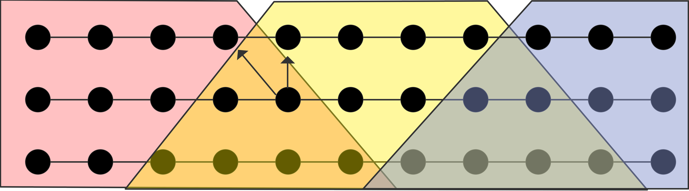FIGURE 6.27: Computation of blocks of grid points over multiple iterations
The first processor computes 4 points on level $n+2$. For this it needs 5 points from level $n+1$, and these need to be computed too, from 6 points on level $n$. We see that a processor apparently needs to collect a ghost region of width two, as opposed to just one for the regular single step update. One of the points computed by the first processor is $x^{(n+2)}_3$, which needs $x^{(n+1)}_4$. This point is also needed for the computation of $x^{(n+2)}_4$, which belongs to the second processor.
The easiest solution is to let this sort of point on the intermediate level redundantly computed , in the computation of both blocks where it is needed, on two different processors.
Can you think of cases where a point would be redundantly computed by more than two processors?We can give several interpretations to this scheme of computing multiple update steps by blocks.
Discuss the case of using this strategy for multicore computation. What are the savings? What are the potential pitfalls?
6.10.1 Analysis
crumb trail: > parallellinear > Grid updates > Analysis
Let's analyze the algorithm we have just sketched. As in equation \eqref{eq:3p-average} we limit ourselves to a 1D set of points and a function of three points. The parameters describing the problem are these:
Each halo communication consists of $b$ points, and we do this $\sqrt N/b$ many times. The work performed consists of the $MN/p$ local updates, plus the redundant work because of the halo. The latter term consists of $b^2/2$ operations, performed both on the left and right side of the processor domain.
Adding all these terms together, we find a cost of \[ \frac Mb\alpha+M\beta+\left(\frac {MN}p+Mb\right)\gamma. \] We observe that the overhead of $\alpha M/b+\gamma Mb$ is independent of $p$,
Compute the optimal value of $b$, and remark that it only depends on the architectural parameters $\alpha,\beta,\gamma$ but not on the problem parameters.
6.10.2 Communication and work minimizing strategy
crumb trail: > parallellinear > Grid updates > Communication and work minimizing strategy
We can make this algorithm more efficient by overlapping computation with communication . As illustrated in figure 6.28 , each processor start by communicating its halo, and overlapping this communication with the part of the communication that can be done locally. The values that depend on the halo will then be computed last.
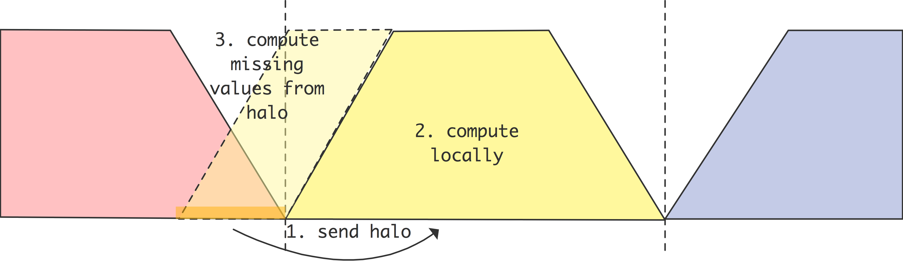FIGURE 6.28: Computation of blocks of grid points over multiple iterations
What is a great practical problem with organizing your code (with the emphasis on `code'!) this way?
If the number of points per processor is large enough, the amount of communication is low relative to the computation, and you could take $b$ fairly large. However, these grid updates are mostly used in iterative methods such as the CG method (section 5.5.11 ), and in that case considerations of roundoff prevent you from taking $b$ too large [ChGe:sstep] .
Go through the complexity analysis for the non-overlapping algorithm in case the points are organized in a 2D grid. Assume that each point update involves four neighbors, two in each coordinate direction.A further refinement of the above algorithm is possible. Figure 6.29 illustrates that it is possible to use a halo region that uses different points from different time steps.
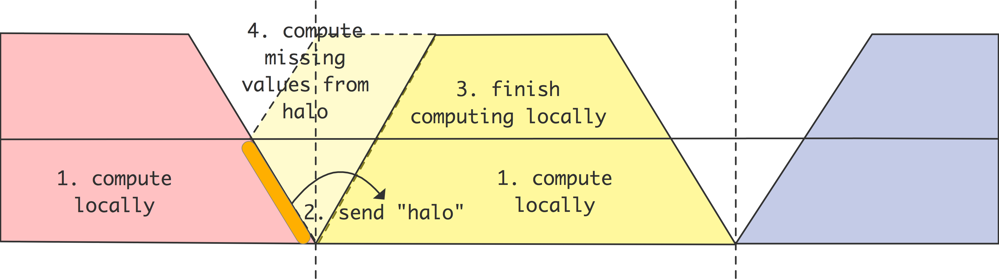FIGURE 6.29: Computation of blocks of grid points over multiple iterations
This algorithm (see [Demmel2008IEEE:avoiding] ) cuts down on the amount of redundant computation. However, now the halo values that are communicated first need to be computed, so this requires splitting the local communication into two phases.
6.11 Block algorithms on multicore architectures
crumb trail: > parallellinear > Block algorithms on multicore architectures
In section~ 5.3.7 you saw that certain linear algebra algorithms can be formulated in terms of submatrices. This point of view can be beneficial for the efficient execution of linear algebra operations on shared memory architectures such as current multicore processors.
\newcommand\chol{\mathop{\mathrm{Chol}}} As an example, let us consider the Cholesky factorization , which computes $A=LL^t$ for a symmetric positive definite matrix~$A$; see also section~ 5.3.2 . Recursively, we can describe the algorithm as follows: \[ \chol \begin{pmatrix} A_{11}&A_{21}^t\\ A_{21}&A_{22} \end{pmatrix} = LL^t\qquad\hbox{where}\quad L= \begin{pmatrix} L_{11}&0\\ \tilde A_{21} &\chol(A_{22}-\tilde A_{21}\tilde A_{21}^t) \end{pmatrix} \] and where $\tilde A_{21}=A_{21}L_{11}\invt,$ $A_{11}=L_{11}L_{11}^t$.
In practice, the block implementation is applied to a partitioning
\[
\left(
\begin{array}{c|c|cc}
&\multicolumn{2}{c}{\mathrm{finished}}\\ \hline
\multirow{2}{*}{}&A_{kk}&A_{k,>k}&\\ \hline
&A_{>k,k}&A_{>k,>k}
\end{array}
\right)
\]
where $k$ is the index of the current block row, and the
factorization is finished for all indices~$
for $k=1,\mathrm{nblocks}$:
Chol
: factor $L_kL_k^t\leftarrow A_{kk}$
Trsm
: solve $\tilde A_{>k,k} \leftarrow A_{>k,k}L_k\invt$
Gemm
: form the product $\tilde A_{>k,k}\tilde A_{>k,k}^t$
Syrk
: symmmetric rank-$k$ update
$A_{>k,>k}\leftarrow A_{>k,>k}-\tilde A_{>k,k}\tilde A_{>k,k}^t$
The key to parallel performance is to partition the indices~$>k$ and write the algorithm in terms of these blocks: \[ \left( \begin{array}{c|c|cc} &\multicolumn{2}{c}{\mathrm{finished}}\\ \hline \multirow{2}{*}{}&A_{kk}&A_{k,k+1}&A_{k,k+2}\cdots\\ \hline &A_{k+1,k}&A_{k+1,k+1}&A_{k+1,k+2}\cdots\\ &A_{k+2,k}&A_{k+2,k+2}\\ &\vdots&\vdots \end{array} \right) \] The algorithm now gets an extra level of inner loops:
for $k=1,\mathrm{nblocks}$:
Chol
: factor $L_kL_k^t \leftarrow A_{kk}$
for $\ell>k$:
Trsm
: solve $\tilde A_{\ell,k} \leftarrow A_{\ell,k}L_k\invt$
for $\ell_1,\ell_2>k$:
Gemm
: form the product $\tilde A_{\ell_1,k}\tilde A_{\ell_2,k}^t$
for $\ell_1,\ell_2>k$, $\ell_1\leq\ell_2$:
Syrk
: symmmetric rank-$k$ update
$A_{\ell_1,\ell_2}\leftarrow A_{\ell_1,\ell_2}
-\tilde A_{\ell_1,k}\tilde A_{\ell_2,k}^t$
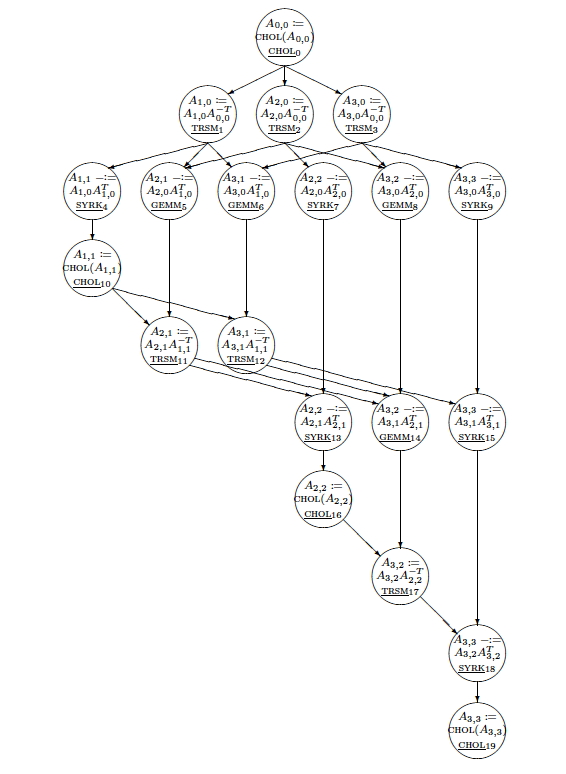
\caption{Graph of task dependencies in a $4\times4$ Cholesky factorization}
Now it is clear that the algorithm has a good deal of parallelism: the iterations in every $\ell$-loop can be processed independently. However, these loops get shorter in every iteration of the outer $k$-loop, so it is not immediate how many processors we can accommodate. Moreover, it is not necessary to preserve the order of operations of the algorithm above. For instance, after \[ L_1L_1^t=A_{11},\quad A_{21}\leftarrow A_{21}L_1\invt,\quad A_{22}\leftarrow A_{22}-A_{21}A_{21}^t \] the factorization $L_2L_2^t=A_{22}$ can start, even if the rest of the $k=1$ iteration is still unfinished. Thus, there is probably a lot more parallelism than we would get from just parallelizing the inner loops.
The best way to approach parallelism in this case is to shift away from a control flow view of the algorithm, where the sequence of operations is prescribed, to a data flow view. In the latter only data dependencies are indicated, and any ordering of operations that obeys these dependencies is allowed. (Technically, we abandon the program order of the tasks and replace it with a partial ordering
{Let's write $a\leq b$ if $a$~is executed before~$b$, then the relation~$\cdot\leq\cdot$ is a partial order if $a\leq b\wedge b\leq a\Rightarrow a=b$ and $a\leq b\wedge b\leq c\Rightarrow a\leq c$. The difference with a total ordering, such as program ordering, is that it is not true that $a\leq b\vee b\leq a$: there can be pairs that are not ordered, meaning that their time ordering is not prescribed.} ).) The best way of representing the data flow of an algorithm is by constructing a DAG (see section~ app:graph for a brief tutorial on graphs) of tasks. We add an edge $(i,j)$ to the graph if task~$j$ uses the output of task~$i$.
In section~ 2.6.1.6 you learned the concept of sequential consistency : a threaded parallel code program should give the same results when executed in parallel as when it's executed sequentially. We have just stated that DAG -based algorithms are free to execute tasks in any order that obeys the partial order of the graph nodes. Discuss whether sequential consistency is a problem in this context.In our example, we construct a DAG by making a vertex task for every inner iteration. Figure~ 6.30 shows the DAG of all tasks of matrix of $4\times4$ blocks. This graph is constructed by simulating the Cholesky algorithm above,
What is the diameter of this graph? Identify the tasks that lie on the path that determines the diameter. What is the meaning of these tasks in the context of the algorithm? This path is called the critical path . Its length determines the execution time of the computation in parallel, even if an infinite number of processors is available.Assume there are $T$ tasks that all take a unit time to execute, and assume we have $p$ processors. What is the theoretical minimum time to execute the algorithm? Now amend this formula to take into account the critical path; call its length $C$.
In the execution of the tasks a DAG , several observations can be made.
)